# Load libraries
# for Quarto
library(rmarkdown)
# For graphing:
library(ggpubr)
library(patchwork) # for combining plots
library(png) # inserting images onto graphs
library(magick) # making images black and white
library(grid) # inserting images onto graphs
library(wesanderson) # color palettes
library(RColorBrewer)
# For modeling:
library(aod) # wald test
library(glmmTMB) # for negative binomial GLM
# for all other code, load last to avoid masking issues
library(tidyverse)Arctic Arthropods
Part I. Data exploration and cleaning
To begin, load relevant libraries and data. Ensure your working directory is set to a folder that contains the dataset and all relevant image files.
Show the code
# LOAD ALL OBJECTS
# Import images for order abundance graph
# use magick library to make color images black-and-white
collembola_img <- image_read("collembola.png") %>%
image_quantize(colorspace = 'gray') %>%
rasterGrob(interpolate = T)
araneae_img <- image_read("araneae.jpg") %>%
image_quantize(colorspace = 'gray') %>%
rasterGrob(interpolate = T)
hymenoptera_img <- image_read("hymenoptera.png") %>%
image_quantize(colorspace = 'gray') %>%
rasterGrob(interpolate = T)
hemiptera_img <- image_read("hemiptera.png") %>%
image_quantize(colorspace = 'gray') %>%
rasterGrob(interpolate = T)
diptera_img <- readPNG('diptera.png') %>% # convert png into numbers
rasterGrob(interpolate= T) # turn numbers into something readable
acari_img <- readPNG("acari.png") %>%
rasterGrob(interpolate = T)
coleoptera_img <- jpeg::readJPEG("coleoptera.png") %>%
rasterGrob(interpolate = T)
lepidoptera_img <- readPNG("lepidoptera.png") %>%
rasterGrob(interpolate = T)This custom function from (“Ggplot2 Error Bars : Quick Start Guide - R Software and Data Visualization - Easy Guides - Wiki - STHDA,” n.d.) will generate a dataframe with summary statistics, which will allow us to add error bars to our graphs later on.
## DEFINE CUSTOM FUNCTIONs
# This function will allow you to add error bars for graphing averages
## data= dataframe
## varname= the column you want the sd for (the y-axis)
## groupnames= a vector of columns to group by when calculating average and sd
data_summary <- function(data, varname, groupnames) {
summary_func <- function(x, col) {
c(mean = mean(x[[col]], na.rm = TRUE),
sd = sd(x[[col]], na.rm = TRUE))
} # NOTE: don't load plyr seperately, creates problems with tidyverse
data_sum <- plyr::ddply(data, groupnames, .fun = summary_func, varname)
## ddply applies a function-- to generate list of means and sd of
## grouping variable-- & turns it into a df
data_sum <- plyr::rename(data_sum, c("mean" = varname))
## renames the "mean" column with variable name (sd will stay same)
return(data_sum)
## spit out the df that you made
}# READ IN DATA
bugs <- read.csv("all_years_bugs_samples.csv", stringsAsFactors = FALSE)
# Take a look at the structure of this dataset with str() and head()
preview<- head(bugs)
str(bugs) # These data need some cleaning!'data.frame': 22419 obs. of 27 variables:
$ MonitoringSite : chr "Coats Island" "Coats Island" "Coats Island" "Coats Island" ...
$ obsYear : int 2015 2015 2015 2015 2015 2015 2015 2015 2015 2015 ...
$ obsYear_str : chr "2015" "2015" "2015" "2015" ...
$ obsWeek : int NA NA NA NA NA NA NA NA NA NA ...
$ sample_num : int 213 215 210 210 210 210 210 210 210 211 ...
$ date_start : chr "6/30/15" "7/7/15" "7/14/15" "7/14/15" ...
$ date_end : chr "" "" "" "" ...
$ date_text : chr "" "" "" "" ...
$ habitat : chr "Scrub Willow" "Scrub Willow" "Dry Heath" "Dry Heath" ...
$ origin : chr "" "" "" "" ...
$ trap_type : chr "yellow pitfall" "yellow pitfall" "yellow pitfall" "yellow pitfall" ...
$ replicate : chr "4" "4" "5" "5" ...
$ insect : chr "" "" "" "" ...
$ stage : chr "" "" "" "" ...
$ order : chr "Araneae" "Diptera" "Collembola" "Acari" ...
$ suborder : chr "" "Brachycera" "" "" ...
$ family : chr "Linyphiidae" "Muscidae" "na" "na" ...
$ genus : chr "" "" "" "" ...
$ higher_classification: chr "" "" "" "" ...
$ common_name : chr "" "" "" "" ...
$ functional_role : chr "Carnivore" "Decomposer" "Decomposer" "Decomposer" ...
$ abundance : int 3 1 14 2 1 1 1 10 5 NA ...
$ biomass : num NA NA NA NA NA NA NA NA NA NA ...
$ length : logi NA NA NA NA NA NA ...
$ box_location : chr "16-G6" "16-H8" "16-F5" "16-F6" ...
$ data_source : chr "2015 Deliverables3 E.Cameron" "2015 Deliverables3 E.Cameron" "2015 Deliverables3 E.Cameron" "2015 Deliverables3 E.Cameron" ...
$ comments : chr "" "" "" "" ...range(bugs$obsYear) # 1999-2023, as expected[1] 1999 2023paged_table(preview)There are 27 columns and 22,419 rows in the original data frame. Each row is associated with a different type of specimen, found in a specific pitfall trap, during a day of data collection. Specimens were identified to order, sometimes family, and rarely genus.
Not all of the columns included here are relevant to my analyses. I will begin by investigating the contents of each one.
## replicate
str(bugs$replicate) # Why is replicate a character? chr [1:22419] "4" "4" "5" "5" "5" "5" "5" "5" "5" "4" "3" "2" "4" "2" "4" ...unique(bugs$replicate) # replicate refers to the pitfall trap number [1] "4" "5" "3" "2" "1" "6" "7" "8" "3B" "3A" "9" "10"
[13] "H5" "H1" "H2" "H3" "H4" "1.0" "2.0" "3.0" "4.0" "5.0" NA ## origin
# Filter data to see where these data exist in our full dataset
bugs %>%
filter(origin %in% c("Terrestrial","Aquatic")) %>%
dplyr::select(obsYear) %>%
summary # These data are limited to 2010-2011 obsYear
Min. :2010
1st Qu.:2010
Median :2010
Mean :2010
3rd Qu.:2011
Max. :2011 ## trap_type
# We only want to use pitfall traps for this analysis
unique(bugs$trap_type) [1] "yellow pitfall" "" "malaise" "cup" ## sample_num
# Sample number is not unique between seasons
# If I want a unique identifer for each sample, I will need to create a new variable
hist(bugs$sample_num,
xlab = "Sample number",
main= "Frequency distribution of sample number")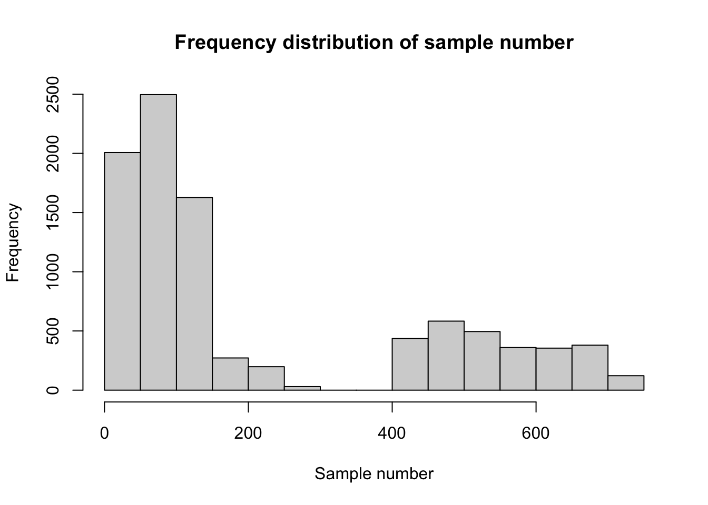
The unique() function is useful for checking what values are used within each column.
Expand the code below to see examples:
Show the code
# Investigating the unique values in unknown columns with
# the unique() function
## obsYear_str
unique(bugs$obsYear_str) # A character string, only available for some years
## obsWeek
unique(bugs$obsWeek) # Values: NA and 1-5
# denotes the week of the season but absent for many years
## date_text
unique(bugs$date_text)
# A text version of the date, will not be useful
# (other date column is more consistent)
## habitat
unique(bugs$habitat) # A lot of different levels, this will take
# some time to clean
## insect
unique(bugs$insect) # We will not need this since we have taxonomic order
## stage
unique(bugs$stage) # refers to insect stage
# We will not need this. Unavailable for many years,
#and is beyond scope of this study
## order
unique(bugs$order)
# We will need to adjust the spelling errors,
# combine the 'no specimens in the sample' rows,
# and investigate the blank and 'x' values
## suborder
unique(bugs$suborder)
## family
unique(bugs$family)
# Same as above, there's cleaning to be done
## genus
unique(bugs$genus)
# Missing for most of the data, but this column contains
# information about Order that will be useful
## higher_classification
unique(bugs$higher_classification) # This column distinguishes
# arthropods, crustaceans, arachnids, and annelids but
# I think it's redundant
## functional_role
unique(bugs$functional_role) # Seems like it was inconsistantly used (NA, blanks, and 'Input' values are confusing)
## comments
unique(bugs$comments) # I will not need thisThe habitat, replicate, and taxonomic columns (order, family, and genus) require further investigation before I can proceed with the first round of data cleaning.
## habitat
# habitat contained values that I do not know how to interpret
# I will use filter() to find out what part of the dataset uses these mystery values
# Define a vector with numerical codes & blank values
weird_habitat <- c('1100', '1300', '500', '200', '900', '100', '1500', '1200', '800', '600', '1400', '0', '300', '1000', '400', '700', "")
# Filter dataset based on this vector with %in%
bugs %>% filter(habitat %in% weird_habitat) %>%
mutate(MonitoringSite= as.factor(MonitoringSite)) %>% # making site a factor
dplyr::select(MonitoringSite, obsYear,abundance) %>% # selecting columns
summary # get max/min and factor levels MonitoringSite obsYear abundance
East Bay Mainland:2093 Min. :1999 Min. : 0.0
1st Qu.:2008 1st Qu.: 1.0
Median :2010 Median : 4.0
Mean :2009 Mean : 17.9
3rd Qu.:2010 3rd Qu.: 13.0
Max. :2010 Max. :436.0
NA's :500 The strange habitat values come from East Bay Mainland data, in a few different years. The numbers code for habitat, but metadata explaining this code does not exist. Unfortunately, these years must be dropped from the analyses.
## replicate
# Replicate contains strange values (H1:H5, and 3A:3B), it should be 1:10
# I need to convert replicate to a numeric so that R recognizes 1.0 = 1
# Defining vectors with strange values
replicates_H <- c("H1", "H2", "H3", "H4", "H5")
# Filtering out H-replicate data
bugs %>%
filter(replicate %in%
replicates_H) %>%
mutate(MonitoringSite= as.factor(MonitoringSite)) %>% # making site a factor
dplyr::select(MonitoringSite, obsYear,abundance) %>% summary MonitoringSite obsYear abundance
East Bay Mainland:500 Min. :2007 Min. : NA
1st Qu.:2007 1st Qu.: NA
Median :2007 Median : NA
Mean :2007 Mean :NaN
3rd Qu.:2008 3rd Qu.: NA
Max. :2008 Max. : NA
NA's :500 # H-replicates occur at EBM in 2007 and 2008, and do not have abundance values
# Filtering out 3A:3B data with the same method
replicates_3 <- c("3A","3B")
bugs %>%
filter(replicate %in% replicates_3) %>%
dplyr::select(MonitoringSite, obsYear, date_start, sample_num, replicate) MonitoringSite obsYear date_start sample_num replicate
1 Coats Island 2016 7/7/16 624 3B
2 Coats Island 2016 7/7/16 623 3A
3 Coats Island 2016 7/7/16 623 3A
4 Coats Island 2016 7/7/16 623 3A
5 Coats Island 2016 7/7/16 623 3A
6 Coats Island 2016 7/7/16 623 3A
7 Coats Island 2016 7/7/16 624 3B
8 Coats Island 2016 7/7/16 624 3B
9 Coats Island 2016 7/7/16 624 3B
10 Coats Island 2016 7/7/16 624 3B
11 Coats Island 2016 7/7/16 624 3B
12 Coats Island 2016 7/7/16 624 3B# These values are from a single day at Coats Island.
# In this case, there must have been too many bugs to fit in a sample tube
# I feel comfortable combining these data The H-replicates occur at East Bay Mainland in 2007 and 2008. Because they lack abundance data, we will need to drop these rows from the analyses.
The 3A:3B rows are from a single day at Coats Island. After examining the rows associated with these replicate values, I determined that the samples are from the same day, pitfall trap, and habitat. There were likely too many specimens to fit in one tube (hence 3A and 3B), so I will combine these data under one replicate called ‘3’.
## order
# There are a few instances of order = X in the dataset
# When and why was this notation used?
bugs %>%
filter(order== "x") %>%
dplyr::select(obsYear, order, family, genus) %>% head obsYear order family genus
1 2010 x x Araneae
2 2010 x x Araneae
3 2010 x x Araneae
4 2010 x x Araneae
5 2010 x x Araneae
6 2010 x x CollembolaAn “x” was placed in the order and family columns when the taxonomic group was incorrectly indicated in genus. We will fix this below.
This preliminary data exploration has revealed which variables I can drop from the data set, and which variables still require tidying.
To clean these data, I will need to:
Remove any data not associated with pitfall traps in
trap_typePut
date_startanddate_endinto the proper month-day-year formatRe-classify relevant columns as factors
Remove H-replicate rows & combine 3A:3B replicate rows in
replicateAdjust taxonomic groups and habitat variables so that spelling, capitalization, and taxonomic levels are consistent (i.e. orders should be in
ordercolumn, notgenus)
Show the code
## Cleaning the dataset
bugs <- bugs %>%
# removing irrelevant columns
dplyr::select(-obsYear_str, -obsWeek, -date_text, -origin,
-higher_classification, -comments,
-stage, -insect, - box_location,
-biomass, -length) %>%
#remove malaise traps
filter(trap_type != "malaise",
!is.na(replicate)) %>%
# Tidying date format
mutate(date_start = mdy(date_start),
date_end = mdy(date_end),
# Reclassifying columns as factors
site = as.factor(MonitoringSite),
habitat = as.factor(habitat),
trap_type= as.factor(trap_type),
order = as.factor(order),
suborder = as.factor(suborder),
family= as.factor (family),
functional_role = as.factor(functional_role),
# Fix the non-numeric replicate values
replicate = as.numeric(ifelse(grepl('3',replicate),'3', # turn 3A and 3B into just 3
ifelse(grepl('H',replicate), NA, replicate))), # convert H -> NA
# Convert values to sentence-case so that they're the same
across(9:13, str_to_sentence),
## HABITAT
# Rename habitat values
new_habitat = as.factor(ifelse(grepl('Scrub|SW',habitat),'SW',
ifelse(grepl(c('Heath|heath|dry|Dry|DH'), habitat),'DH',
ifelse(grepl(c('Sedge|sedge|SM'),habitat),'SM',
ifelse(grepl(c('Intertidal|intertidal|IT'), habitat), 'IT',
ifelse(grepl(c('Gravel|gravel|GR'), habitat),'GR',
ifelse(grepl(c('Moss|moss|MC'),habitat),'MC', NA))))))),
# Create a new, very general habitat category that
habitat_general = as.factor(ifelse(grepl('Wet|wet', habitat),'Wet',
ifelse(grepl('SM|SW|MC', new_habitat),'Wet',
ifelse(grepl('Dry|dry',habitat),'Dry',
ifelse(grepl('DH|GR', new_habitat),'Dry',
ifelse(grepl('IT',new_habitat),'IT',
# NOTE: some 2010 data don't have habitat labelled, but you can tell
# it's from wet/dry habitat based on data-source
ifelse(grepl('mesic|Mesic',data_source),'Wet',
ifelse(grepl('Dry|dry',data_source),'Dry',NA)))))))),
## TAXONOMY
# Order (renaming)
new_order= as.factor(ifelse(grepl('Aran', order),'Araneae',
ifelse(grepl('Aran', genus), 'Araneae',
ifelse(grepl('Brach|Ephydrid|
Tipul|Ceratop|Collemb|
Muscid|Cecidom|Sciarid|Trichoc|Chironomid|
Mycetophilidae|Culicid', genus),'Diptera',
ifelse(grepl('Clado', genus),'Cladocera',
ifelse(grepl('Hymenopt|Bombus|bombus|Bomnus', genus),'Hymenoptera',
ifelse(grepl('Hemipt',order),'Hemiptera',
ifelse(grepl('Saldidae',genus),'Hemiptera',
ifelse(grepl('Lepidopt',genus),'Lepidoptera',
ifelse(grepl('Tric',order),'Tricoptera',
ifelse(grepl('Trichop',genus),'Tricoptera',
ifelse(grepl(c('No|Misc'),order),NA,
ifelse(grepl('Slug',order),'Soleolifera',
ifelse(grepl('Chydor',family),'Anomopoda',
ifelse(grepl('Chydoridae', genus),'Anomopoda',
ifelse(grepl('Spider',common_name),'Araneae',
ifelse(grepl('Springtail',common_name),'Collembola',
ifelse(grepl('Carabidae|Dytiscid|Staphylin|
Cicindel',genus),'Coleoptera',
ifelse(grepl('Ephemerop', genus), 'Ephemeroptera',
ifelse(grepl('Water fleas', common_name),'Anomopoda',
ifelse(grepl('Fairy shrimp', common_name),'Anostraca',
ifelse(grepl('Seed shrimp', common_name),'Podocopida',
ifelse(grepl('Acari', genus),'Acari',
ifelse(grepl('Mite', common_name),'Acari', order)))))))))))))))))))))))),
# Family (renaming)
# Using family & genus columns
new_family= as.factor(ifelse(grepl(c('Unknown|Unsure|Larva|Caterp|Moth|Butt|X|Na|empty'), family),NA,
ifelse(grepl('Liny',family),'Linyphiidae', # rename family values
ifelse(grepl('Tenth',family),'Tenthredinidae',
ifelse(grepl('Brachyc',genus),'Brachycera',
ifelse(grepl('Tipulid',genus),'Tipulidae',
ifelse(grepl('Ceratop',genus),'Ceratopogonidae',
ifelse(grepl('Collemb',genus),'Collembola',
ifelse(grepl('Chydori',genus),'Chydoridae',
ifelse(grepl('Musci',genus),'Muscidae',
ifelse(grepl('Cecidomyi',genus),'Cecidomyiidae',
ifelse(grepl('Bombus|Bomnus',genus),'Apidae',
ifelse(grepl('Sciaridae',genus),'Sciaridae',
ifelse(grepl('Chironom',genus),'Chironomidae',
ifelse(grepl('Carabidae',genus),'Carabidae',
ifelse(grepl('Ephydrid',genus),'Ephydridae',
ifelse(grepl('Dytiscid',genus),'Dytiscidae',
ifelse(grepl('Trichocera',genus),'Trichocera',
ifelse(grepl('Saldid',genus),'Saldidae',
ifelse(grepl('Mycetophil',genus),'Mycetophilidae',
ifelse(grepl('Culicid',genus),'Culicidae',
ifelse(grepl('Staphylin',genus),'Staphylinidae',
ifelse(grepl('Cicindelid',genus),'Cicindelidae',
family))))))))))))))))))))))),
# Classify pitfall related trap terms under one term
new_trap_type = as.factor(ifelse(grepl('cup|yellow',trap_type),'pitfall','pitfall')),
#filling in the blanks with pitfall trap (filtered out the
#malaise traps and by default we use pitfalls)
# Fix the functional role
new_functional_role = as.factor(
ifelse(grepl(
'Carnivore|Decomposer|Parasitoid|Blood feeder|Herbivore|Pollinator',functional_role),
functional_role, NA))) %>% #I'm making all the Inputs NAs, bc they represent missing data
#remove these, because they cannot be classified to order (Copepods)
filter(new_order != 'X')
## Any remaining blank values in the family or order column should be coded as NA
bugs$new_family[bugs$new_family == ""]<- NA
bugs$new_order[bugs$order == ""]<- NAA note about missing values
In this dataset, the absence of arthropods is implicit. Implicit absences mean that, in cases where there were no arthropods in the pitfall trap, there is no row associated with that replicate in the data. If absence were explicit, there would be at least one row for every replicate, with abundance equal to zero in cases where there were no specimens in the sample. This will become important later on, when we build our abundance GLM model.
In the order and family columns, NAs could mean that there were no specimens in the sample, or that the biologist was unable to identify the specimen to that taxonomic level.
For this analysis, order is our broadest taxonomic category, and therefore should not contain any missing values. Likewise, there should not be any NAs in our obsYear, abundance, and date_start columns.
Show the code
# Select only the cleaned columns you need
bugs <- bugs %>% dplyr::select(-MonitoringSite, -(6:7), -(9:13), -data_source) %>%
# Drop those columns that shouldn't have NAs
drop_na(obsYear, abundance, new_order, date_start) Finishing touches on clean data
Now that we have fixed the majority of the issues with these data, we can begin to see the remaining errors more clearly. The new_habitat, habitat_general, and date_end columns require more work, and I want to create a variable, replacing the original sample_num, that identifies each unique sample across seasons.
When looking at the output of the above code, I noticed that the date_end column is not used consistently throughout the study period. I need to determine the actual collection date of each sample before moving forwards. I also want to make sure that we have values for habitat_general at minimum, in every row (missing new_habitat values are okay).
Show the code
## Investigate date_end
# When is date_start equal to date_end? Create a new column with this T/F variable
bugs$matched_date <- bugs$date_start %in% bugs$date_end
bugs %>% filter(matched_date != TRUE) %>% # filter based on logical column
dplyr::select(date_start, date_end) %>% head date_start date_end
1 2015-06-30 <NA>
2 2015-07-07 <NA>
3 2015-07-14 <NA>
4 2015-07-14 <NA>
5 2015-07-14 <NA>
6 2015-07-14 <NA>Show the code
# The only time date_start does not equal date_end is when date_end is NA
# so I can go ahead and drop both this new column and date_end in confidence
## Investigate missing habitat data
# When do we lack habitat data for both general and specific category?
bugs %>% filter(is.na(new_habitat) & is.na(habitat_general)) %>%
dplyr::select(obsYear, site, new_habitat, habitat_general) %>%
summary obsYear site new_habitat habitat_general
Min. :1999 Coats Island : 0 DH : 0 Dry : 0
1st Qu.:2010 East Bay Mainland:506 GR : 0 IT : 0
Median :2010 Goose Camp : 0 IT : 0 Wet : 0
Mean :2008 MC : 0 NA's:506
3rd Qu.:2010 SM : 0
Max. :2010 SW : 0
NA's:506 Show the code
# There are 506 rows where we are missing habitat data from EBM site between 1999 and 2010 (inclusive). I'll have to drop these rows for my analyses.
## Final cleaning of dataset for analysis
bugs <- bugs %>% dplyr::select(-date_end, -matched_date) %>% # remove unwanted columns
# create a new ID number that identifies each unique sample
# based on year, day sample was collected, site, habitat, and replicate number
mutate(sample_ID = udpipe::unique_identifier(bugs, fields =
c("obsYear", "date_start","site","new_habitat","replicate"),
start_from = 1),
# Create a julian date column
julian_day = yday(date_start)) %>%
# Remove more unwanted columns
dplyr::select(-sample_num, -new_trap_type) %>%
# Reorder columns
dplyr::select(obsYear, date_start, julian_day, site, habitat_general,new_habitat,
replicate, sample_ID, new_order, new_family, abundance) %>%
# Remove rows where we're msising BOTH habitat types
### NOTE: sometimes we have habitat_general but not new_habitat
filter(!(is.na(new_habitat) & is.na(habitat_general)))
## Double-check to make sure your cleaning worked
# Should be no more instances where both habitat values are missing
bugs %>% filter(is.na(new_habitat) & is.na(habitat_general)) [1] obsYear date_start julian_day site
[5] habitat_general new_habitat replicate sample_ID
[9] new_order new_family abundance
<0 rows> (or 0-length row.names)Show the code
# But we should still have rows where we have habitat_general but not new_habitat
bugs %>% filter(is.na(new_habitat)) %>% head obsYear date_start julian_day site habitat_general new_habitat
1 2010 2010-07-17 198 East Bay Mainland Wet <NA>
2 2010 2010-07-17 198 East Bay Mainland Wet <NA>
3 2010 2010-07-17 198 East Bay Mainland Wet <NA>
4 2010 2010-07-17 198 East Bay Mainland Wet <NA>
5 2010 2010-07-17 198 East Bay Mainland Wet <NA>
6 2010 2010-07-17 198 East Bay Mainland Wet <NA>
replicate sample_ID new_order new_family abundance
1 5 382 Diptera Sciaridae 14
2 5 382 Hemiptera Saldidae 1
3 5 382 Araneae <NA> 15
4 5 382 Hymenoptera <NA> 7
5 5 382 Lepidoptera <NA> 1
6 5 382 Diptera <NA> 47# Look at finalized clean data
clean_preview<- head(bugs)
paged_table(clean_preview)Part II. Descriptive statistics
How are the monitoring sites different from each other?
To avoid conflating changes in arthropod communities with unmeasured differences in study areas, it’s important to understand how data from East Bay Mainland, Goose Camp, and Coats Island differ.
replicates <- bugs %>%
group_by(obsYear, date_start, site, habitat_general, new_habitat) %>%
summarize(count = n_distinct(replicate)) %>%
ggplot(aes(x=count, y = obsYear,
colour= site, size= count)) +
geom_point() + theme_bw() +
scale_x_continuous(breaks=seq(1,10,1)) +
scale_color_manual(values= wes_palette(n=3, "Cavalcanti1")) +
labs(x= "Number of replicates", y = "Year",
colour= "Study Area",
size= "Count",
title = "Number of replicates used in each study area and year")
replicates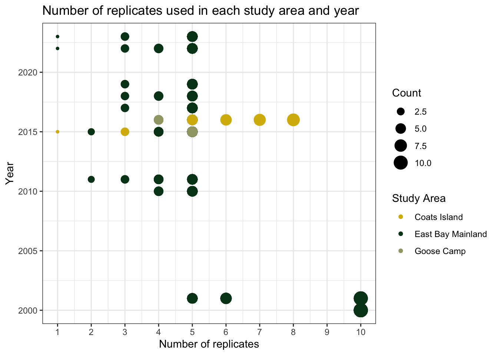
There are large differences in the sampling efforts at each site. For example, Goose Camp and Coats Island have data from just two years (2014-2015). East Bay Mainland has the most consistent data, although in the early years of the study there were 10 replicates for wet and dry habitats (versus 5 or fewer in more recent years).
Creating a data subset
In addition to variation in sampling effort, environmental conditions, such as the impact of light geese, differed between sites (Flemming et al. 2022). For these reasons, I will limit the analyses for this project to East Bay Mainland.
At East Bay Mainland, some of the recent new_habitat values are missing. I know from experience with data collection at this site that the ‘wet’ habitat in habitat_general is equivalent to sedge meadow, and ‘dry’ habitat is equivalent to gravel ridge. Thus, I can fill in missing values in new_habitat for this subset accordingly.
Additionally, intertidal, scrub willow, moss carpet, and dry heath data are not consistently available in new_habitat from 2000 to 2023. To simplify my analyses, I’ll focus on just sedge meadow and gravel ridge habitats.
Show the code
## Subsetting bugs data and filling in new_habitat values
# To fill in these habitat values, I will need to split the data frame into 2:
## a df with new_habitat data, and a df without
# DF with new_habitat data
bugs_EBM_pt1 <- bugs %>%
filter(site == "East Bay Mainland",
!is.na(new_habitat))
# DF without new_habitat data
bugs_EBM_pt2 <- bugs %>%
filter(is.na(new_habitat)) %>%
mutate(new_habitat =
#filling in NAs with SM or GM based on habitat_general
ifelse(grepl('Wet',habitat_general),'SM','GR'))
# Bind them together, so that there are new_habitat values for those years
bugs_EBM <- rbind(bugs_EBM_pt1, bugs_EBM_pt2)I also want a way to distinguish between individual traps in each season (i.e. replicate 1 in 2013 versus replicate 1 in 2023). I will call this ID variable trap_year
## Adding a trap-year identifier and removing IT data
# For my descriptive stats, I will want a variable that groups trap data from the same year
## (ex. something that allows me to look at all data from replicate 5 in 2001)
bugs_EBM <- bugs_EBM %>%
# Create trap-year identifier
mutate(trap_year =
udpipe::unique_identifier(bugs_EBM,
fields = c("obsYear", "new_habitat", "replicate"),
start_from = 1)) %>%
# Remove IT data
filter(new_habitat!= "IT")Exploratory Questions
At East Bay Mainland, we have arthropod abundance data ranging from 2000 to 2023. During this time frame, we observed a total of 368678 arthropods from 11 different orders and 42 unique families.
What types of arthropods did we see?
Show the code
# Make a bar chart showing abundance of each top Orders in dataset
# Build graph
bugs_EBM %>%
group_by(new_order) %>%
summarise(total_abundance= sum(abundance)) %>%
mutate(prcnt_abundance = 100*(total_abundance/sum(total_abundance))) %>%
filter(prcnt_abundance>0.1) %>% # show only the larger represented groups
# reorder so that bars are descending
ggplot(aes(x=reorder(new_order,-prcnt_abundance),
y=prcnt_abundance)) +
# change color of bars (must be out of aes)
geom_col(fill = '#293352') +
theme_bw()+ # keeping this retains the border around the graph
geom_text(aes(label= signif(prcnt_abundance, digits = 3), vjust= -0.5)) +
labs(x= "Arthropod order",
y= "Percent of total arthropod abundance",
title= "Percent total arthropod abundance across orders from 2000-2023") +
# Adjusting thematic aesthetics (background, gridlines, text)
theme(plot.margin = unit(c(1,1,1,1), "cm"),
plot.title=element_text(size=13, vjust= 5),
axis.title.x=element_text(vjust=-2.5),
panel.background = element_blank(), # white background
panel.grid= element_blank(),# without grid lines
# adjusting text on x-axis
axis.text.x = element_text(angle = 90, hjust= 0, vjust= 0.5, size = 10)) +
ylim(0,65) + # add white space at top of graph
# insert images of arthropods, adjusting position manually
annotation_custom(diptera_img, xmin= .6, xmax = 1.4, ymin= 60, ymax= 67) +
annotation_custom(acari_img, xmin= 5.6, xmax = 6.4, ymin= 8, ymax = 17)+
annotation_custom(collembola_img, xmin= 1.5, xmax = 2.6, ymin= 40, ymax = 47) +
annotation_custom(araneae_img, xmin= 2.2, xmax = 4, ymin= 15, ymax = 24) +
annotation_custom(hymenoptera_img, xmin= 3.4, xmax = 4.6, ymin= 8, ymax = 17) +
annotation_custom(coleoptera_img, xmin= 4.4, xmax = 5.6, ymin= 8, ymax = 17) +
annotation_custom(hemiptera_img, xmin= 6.4, xmax = 7.6, ymin= 8, ymax = 17) +
annotation_custom(lepidoptera_img, xmin= 7.4, xmax = 8.6, ymin= 8, ymax = 17) 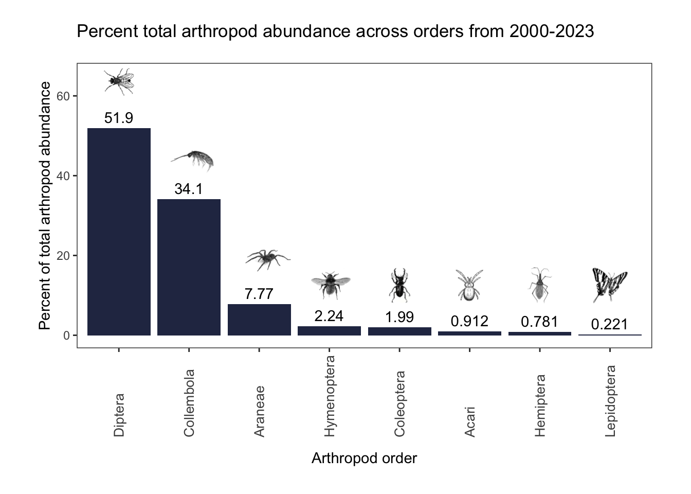
Diptera (flies), the highest represented Order, made up 52% of the total abundance. 34% of specimens belonged to Collembola (springtails). Araneae (spiders), Hymenoptera (bees and wasps), and Coleoptera (beetles) represented the remaining abundance values above 1%.
Show the code
# What about at the family level?
# Defining a custom theme to make it easier to code
# When used with theme_bw(), yields a blank background, black border
custom_theme <- theme(axis.text.x = element_text(angle = 45, vjust=0.5),
plot.margin = unit(c(1,1,1,1), "cm"),
plot.title=element_text(size=13, vjust= 5),
axis.title.x=element_text(vjust=-2.5),
panel.background = element_blank(), # white background
panel.grid= element_blank()) # without grid lines
# Creating a dataframe with percent abundance of families within each order
families <- bugs_EBM %>%
group_by(new_order, new_family) %>%
summarise(total_abundance= sum(abundance),
.groups = "keep") %>% # this is the total abundance (habitats added together)
group_by(new_order) %>%
mutate(prcnt_abundance = 100*(total_abundance/sum(total_abundance))) %>%
filter(prcnt_abundance>=0.6,
!is.na(new_family))
diptera<- families %>%
filter(new_order=="Diptera") %>%
ggplot(aes(x=reorder(new_family,-prcnt_abundance),
y=prcnt_abundance)) +
geom_col(fill = '#293352')+ theme_bw() +
ylim(0,45)+
geom_text(aes(label= signif(prcnt_abundance, digits = 3), vjust= -0.2))+
custom_theme +
labs(x= "Diptera families",
y= "Total abundance (%)")
diptera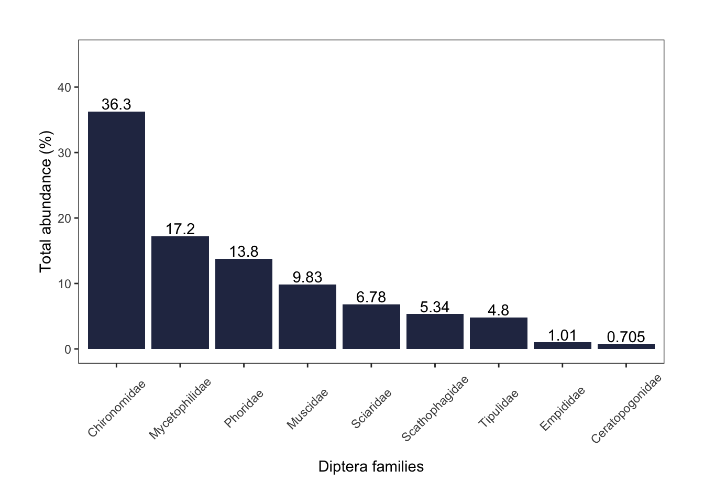
Show the code
araneae<- families %>%
filter(new_order == "Araneae") %>%
ggplot(aes(x=reorder(new_family,-prcnt_abundance),
y=prcnt_abundance)) +
geom_col(fill = '#293352')+ theme_bw() +
geom_text(aes(label= signif(prcnt_abundance, digits = 3), vjust= -0.2))+
custom_theme +
ylim(0,90)+
labs(x= "Araneae families",
y= "Total abundance (%)")
araneae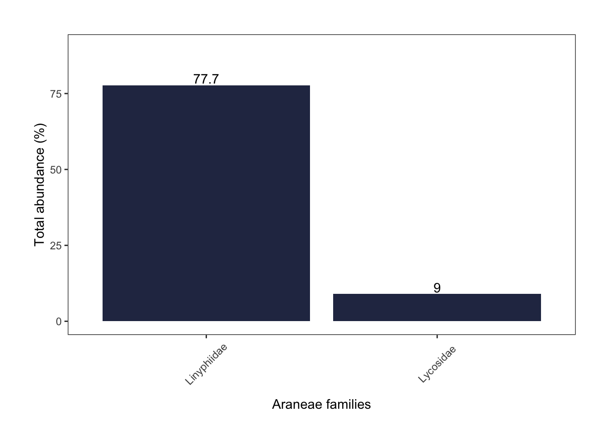
Show the code
hymenoptera <-families %>%
filter(new_order== 'Hymenoptera') %>%
ggplot(aes(x=reorder(new_family,-prcnt_abundance),
y=prcnt_abundance)) +
geom_col(fill = '#293352')+ theme_bw() +
geom_text(aes(label= signif(prcnt_abundance, digits = 3), vjust= -0.2))+
ylim(0,65)+
custom_theme +
labs(x= "Hymenoptera families",
y= "Total abundance (%)")
hymenoptera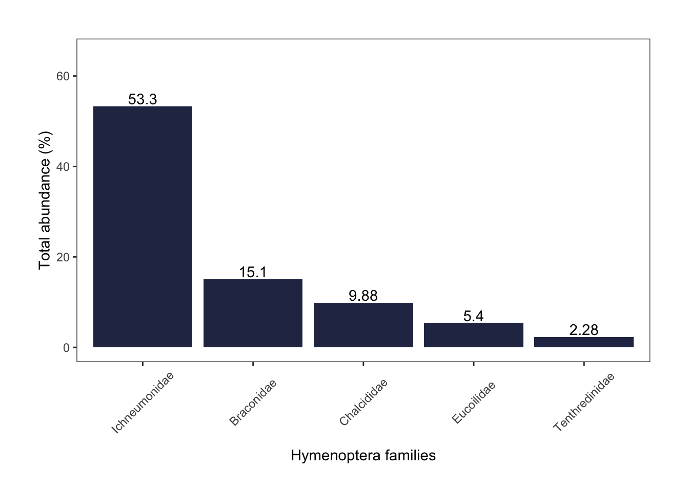
Show the code
coleoptera <-families %>%
filter(new_order== 'Coleoptera') %>%
ggplot(aes(x=reorder(new_family,-prcnt_abundance),
y=prcnt_abundance)) +
geom_col(fill = '#293352')+ theme_bw() +
geom_text(aes(label= signif(prcnt_abundance, digits = 3), vjust= -0.2))+
custom_theme +
ylim(0,76)+
labs(x= "Coleoptera families",
y= "Total abundance (%)")
coleoptera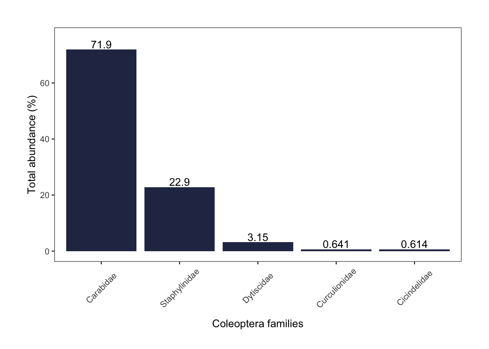
Although Collembola (springtails) were the second most abundant Order in our data, none of these specimens were identified to family.
Of the Diptera Order, the top three most abundant families were chironomid midges (36%), fungus gnats (17%) and scuttle flies (14%).
Sheetweb weavers (78%) were the most common identified spider family by far, followed by wolf spiders (9%).
Among Hymenoptera, ichneumon wasps (53%) were most abundant, followed by braconid (15%) and chalcid wasps (10%).
Finally, the majority of the Coleoptera represented were ground beetles (72%) and rove beetles (23%), with a much smaller portion coming from the Predaceous diving beetle family (3%).
Did any of our traps have particularly high arthropod abundance in a given year?
To check for any outliers in our data, I will look at the annual abundance of each replicate in our dataset from 2000 to 2023.
Show the code
# Create a df with annual abundance for each unique trap in a given year
abund_trap_yr <- bugs_EBM %>%
# group by year, smallest scale habitat label, and replicate.
group_by(obsYear, new_habitat, replicate, trap_year) %>%
# add up the abundance for each 'trap-year'
summarise(total_abundance= sum(abundance))
# Create a df that the legend can refer to (linked to data, so that
### if my numbers change, I don't need to redo everything manually)
abund_trapyr_legend <- abund_trap_yr %>%
group_by(new_habitat) %>%
summarise(n= n_distinct(trap_year))
# Define colors/habitats for custom legend
cols <- c('SM'= "#52854C",'GR' = "darkgrey", 'SW'= '#293352','DH'= "#D16103", 'MC'= "#4E84C4")
habitats <- c('SM'= paste('Sedge Meadow n=',abund_trapyr_legend$n[4]),
'GR'= paste('Gravel Ridge, n=',abund_trapyr_legend$n[2]),
'SW' = paste('Scrub Willow, n=',abund_trapyr_legend$n[5]),
'DH'= paste('Dry Heath, n=',abund_trapyr_legend$n[1]),
'MC'= paste('Moss Carpet, n=',abund_trapyr_legend$n[3]))
abund_trap_yr %>%
ggplot(aes(x=trap_year,
y=total_abundance,
colour= new_habitat)) +
geom_point()+ theme_bw() +
scale_colour_manual(name= "Habitat, # of trap-years",
labels = habitats,
values = cols, aesthetics = 'colour') +
labs(x= "Trap-Year identifier",
y= "Total arthropod abundance in a given year",
title= "Total arthropod abundance for unique trap-year combinations")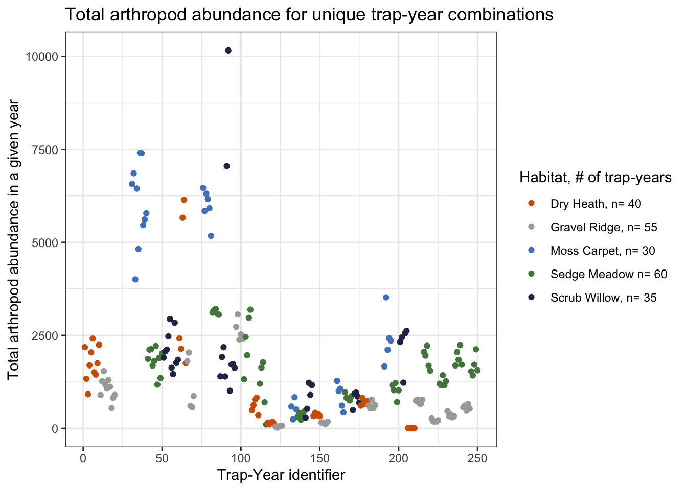
At first glance, it seems like some habitat types support higher amounts arthropods, with moss carpet being the most extreme example. Traps in gravel ridge and dry heath habitat seem to stay consistently below 3,000 arthropods per year, with the exception of two dry heath outliers. There is a cluster of traps in moss carpet that have very high annual abundances, and two extreme scrub willow outliers.
I will investigate these high abundance traps below.
Show the code
# let's look at those early trap-year ID values
high_abundance <- abund_trap_yr %>%
filter(total_abundance >= 4000)
high_abundance %>%
ggplot(aes(x = as.factor(reorder(trap_year, -total_abundance)),
y = total_abundance,
fill=as.factor(obsYear))) +
geom_col() +
theme_bw()+
scale_fill_manual(values= brewer.pal(n=3, "Paired"))+
labs(fill= 'Year',
x= "Trap-Year",
y= 'Total abundance',
title= "The total arthropod abundance for outlier trap-year combinations")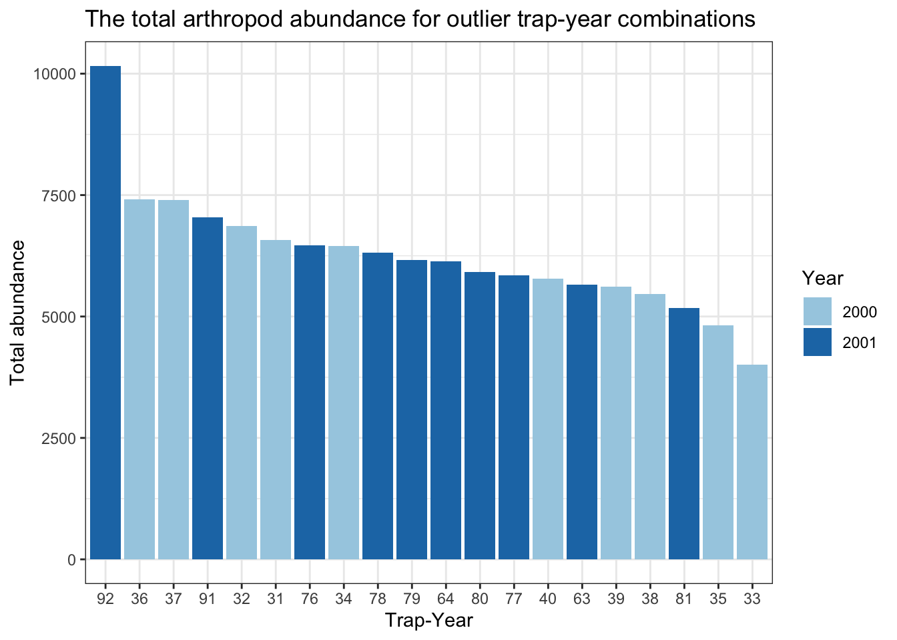
Show the code
# trap-year 92 has a really high abundance (10160)
# Years 2000-2001 are the culprits with really high abundances
# What insects were found in these high productivity traps from 2000-2001?
high_productivity_plot <- bugs_EBM %>%
filter(trap_year %in% high_abundance$trap_year) %>%
group_by(trap_year, new_order) %>%
# what is the total abundance of each order, for each trap-year?
# NOTE: R automatically summarizes based off of new_order
summarise(total_abundance= sum(abundance)) %>%
# this is the total abundance of each order in each high productive trap-year
ggplot(aes(x=reorder(new_order,-total_abundance),
y=total_abundance)) +
geom_col(fill = '#293352') + theme_bw() +
custom_theme +
labs(x= "Arthropod Order",
y= "Total arthropod abundance for each trap-year",
title= "Annual arthropod abundance in high productivity traps")
high_productivity_plot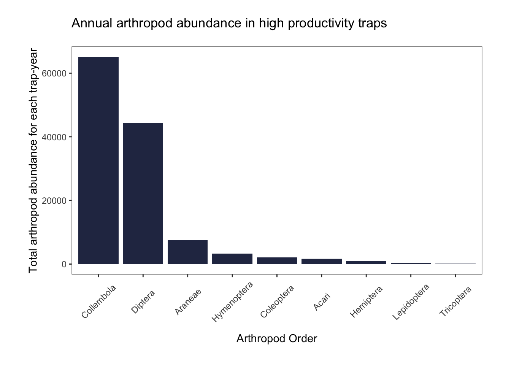
In these high productivity traps, there were more springtails than flies, a pattern inconsistent with what we see in our full dataset. All of these outliers occurred in 2000-2001.
These deviations from the rest of our dataset underscore the importance of focusing remaining analyses on the sedge meadow and gravel ridge habitats.
Do we have any temporal gaps in our data?
I am interested in exploring how arthropod community composition and abundance has changed over time, but first I will need to check if there are any big temporal gaps in our EBM subset.
Remember: In the below plot, frequency is equivalent to the number of rows in the data frame belonging to each year. Frequency is not equivalent to abundance.
Show the code
# Plot the distribution of arthropod data throughout the years
# with general habitat classification
bugs_EBM %>%
ggplot(aes(x= obsYear, fill= habitat_general))+ theme_bw() +
geom_histogram() +
scale_fill_manual(values= wes_palette(n=3, "Cavalcanti1")) +
custom_theme +
labs(x= "Year",
y= "Frequency",
fill = "Habitat",
title= "The distribution of arthropod data across years\
(2000-2023) at East Bay Mainland")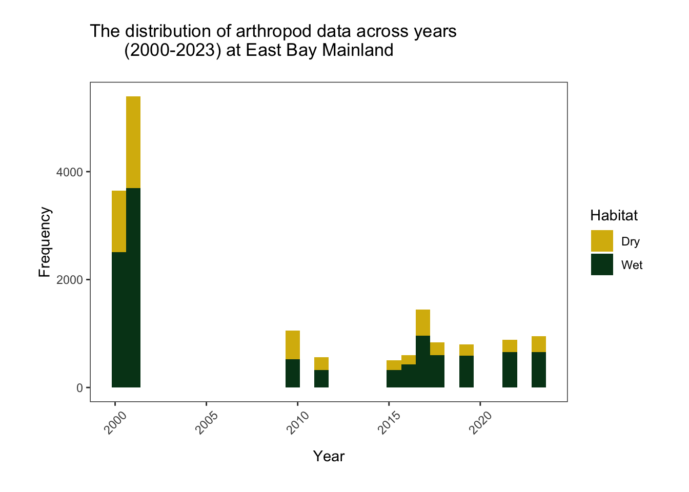
This graph shows the number of rows (the frequency) associated with “Wet” and “Dry” habitat in each year of the study. It appears that there is a large temporal gap between 2001 and 2009, and a slightly smaller gap between 2011 and 2015. There are more data associated with 2000-2001, possibly because these years had more than 5 replicates and sampled more habitat types.
It appears that there are more rows associated with wet habitat than dry habitat. This could be because empty samples are implicit (there are often empty samples in dry, gravel ridge habitat).
To look at our data distribution more closely, I will make a similar plot with my fine-scale new_habitat column. I will also restrict these data to just 5 replicates. This will help me to determine if the higher frequency in 2000-2001 is related to more unique records (and therefore more specimens) or more replicates.
Show the code
# Plot the distribution of arthropod data throughout the years
# with new habitat classification
# Define colors and legend lables for plot (below)
cols <- c('SM'= "#52854C",'GR' = "darkgrey", 'SW'= '#293352','DH'= "#D16103", 'MC'= "#4E84C4")
habitats <- c('SM'= 'Sedge Meadow','GR'= 'Gravel Ridge','SW' = 'Scrub Willow','DH'='Dry Heath','MC'= 'Moss Carpet')
bugs_EBM %>%
filter(replicate <= 5) %>% # filtering out replicates less than or equal to 5
ggplot(aes(x= obsYear, fill= new_habitat))+
geom_histogram() +
theme_bw() +
# customize plot legend
scale_colour_manual(name= "Habitat",
labels = habitats,
values = cols, aesthetics = 'fill') +
theme(panel.background = element_blank(), # alters the plot background
panel.grid = element_blank()) +
labs(x= "Year",
y= "Frequency",
fill = "Habitat",
title= "The distribution of arthropod data across years (2000-2023)\
at East Bay Mainland")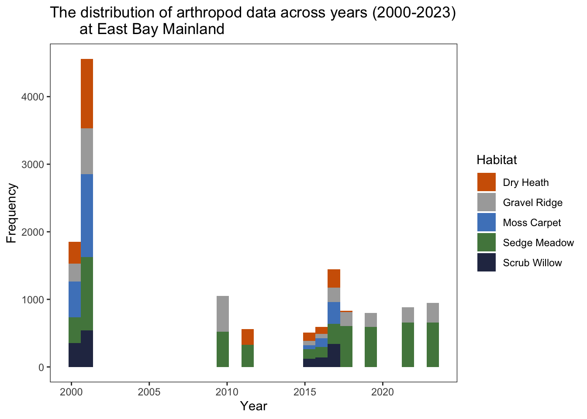
When just looking at replicates 1-5 from gravel ridge and sedge meadow habitats, these data appear to be slightly more balanced (although the number of records in wet habitats are consistently higher compared to dry habitats). NOTE: In 2011, we are lacking gravel ridge samples entirely, and in 2015-2016 we have very few unique records.
Was each season the same length from 2000-2023?
We have already seen that the sampling design of this study is unbalanced from year to year, with a concerning gap between 2001 and 2010. It is also important to consider the length of time that data was collected within each season.
Show the code
# Plot the number of julian days associated with our samples in each year
bugs_EBM %>%
dplyr::group_by(obsYear) %>%
dplyr::summarize(num_days = n_distinct(julian_day)) %>%
ggplot(aes(x= obsYear, y= num_days)) +
geom_col(fill='#293352') +theme_bw() +
custom_theme +
labs(y= "Sampling period (no. of days)",
x= "Year",
title= "Arthropod sampling periods from 2000-2023")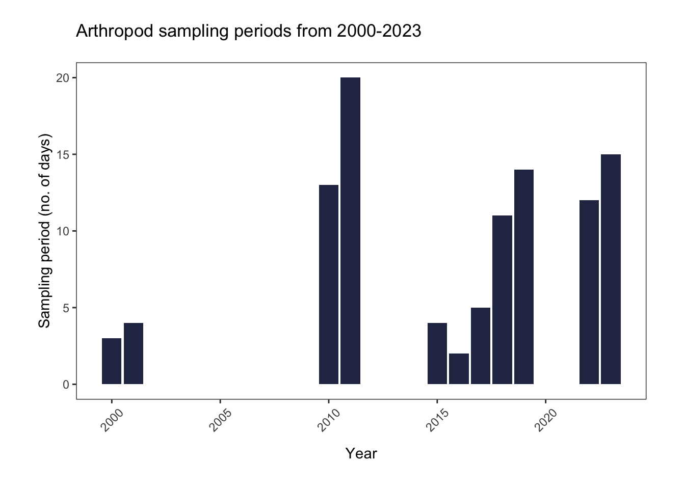
2000-2001 and 2015-2017 had very short sampling periods. It’s interesting that, despite a time-frame of less than 5 days, 2000-2001 have the most “productive” traps, and the highest annual abundances.
In summary, the sampling design of this study is not well-balanced. We will need to consider these biases as we complete our analyses.
Part III. Exploratory Data Analysis
Key Questions
How has the community composition of arthropods at East Bay Mainland changed over time? Has community composition shifted in some habitat types but not others?
How has the abundance of arthropods changed over time?
Has the timing of arthropod emergence at East Bay Mainland shifted from 2000-2023? If there has been a shift, is it more extreme in dry or wet habitat?
Community Composition
While we do not have species-level data, we know from our data exploration that Diptera, Collembola, Aranea, Hymenoptera, and Coleoptera are the top five most abundant arthropod orders.
We can calculate a species richness proxy by looking at how the number of orders in each habitat have changed throughout the study period.
Show the code
# Create a data frame that shows the number of different orders,
# standardized by sample number, in wet and dry habitat
sr_order <- bugs_EBM %>%
filter(new_habitat %in% c("SM","GR")) %>%
#removing all samples where we didn't have family data
dplyr::group_by(obsYear, new_habitat) %>% #including this smaller habitat var
dplyr::summarise(taxa_richness= n_distinct(new_order),
total_samples= n_distinct(sample_ID),
richness_sample = taxa_richness/total_samples,
.groups = 'keep')
# reorder factor so dry is on the bottom of legend
sr_order$new_habitat <- factor(sr_order$new_habitat,
c("SM","GR"))
sr_order %>%
ggplot(aes(x=obsYear, y= taxa_richness, colour = new_habitat))+
geom_line() +
geom_point() + theme_bw() +
scale_color_manual(values= wes_palette(n=2, "Cavalcanti1"))+
labs(x= "Year (2000-2023)",
y= "Total taxa richness (by order)",
title= "Total annual taxa richness (distinct orders) by habitat",
colour= "Habitat")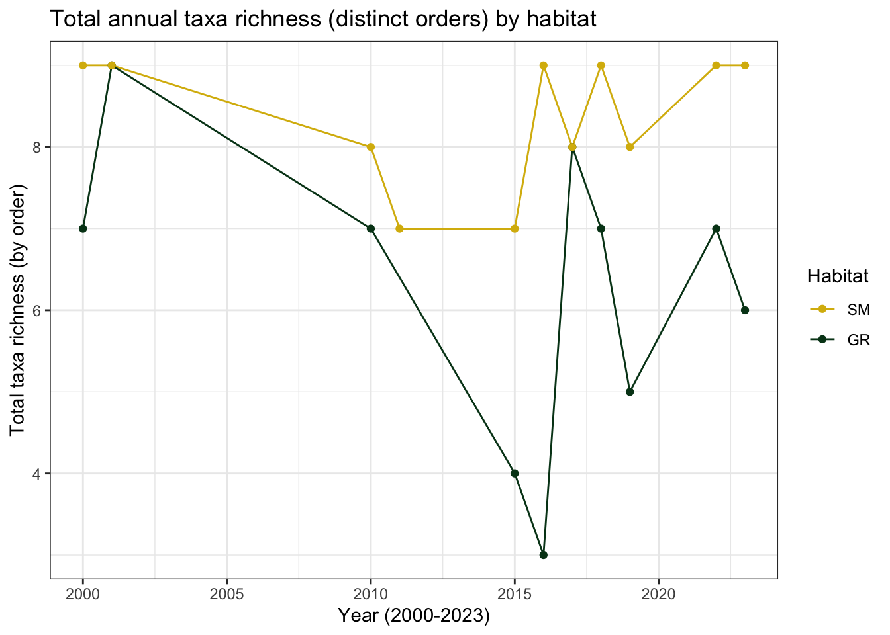
Show the code
## Let's dig into the community composition in SM vs GR habitats a bit more:
## Sedge Meadow
bugs_EBM %>%
dplyr::filter(new_habitat== "SM") %>% # all sedge meadow habitat
dplyr::group_by(obsYear, new_habitat, new_order) %>% #
dplyr::summarise(total_abundance= sum(abundance), .groups="keep") %>%
# This yields a df with an abundance value for each order present in the group
ggplot(aes(x=obsYear,
fill= as.factor(new_order))) +
geom_bar()+ theme_bw() +
custom_theme +
labs(x= "Year (2000-2023)",
y= "Presence of orders",
title= "Distribution of order in sedge meadow across the study period",
fill= "Order") 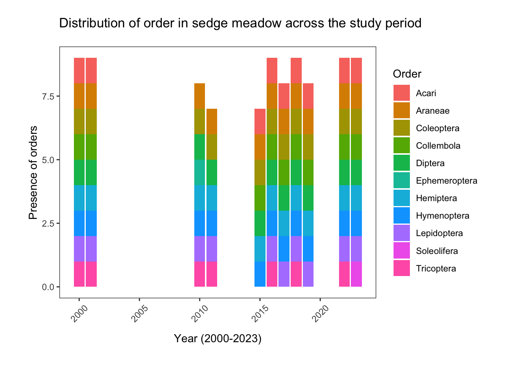
Show the code
## Gravel Ridge
bugs_EBM %>%
dplyr::filter(new_habitat== "GR") %>% # all sedge meadow habitat
dplyr::group_by(obsYear, new_habitat, new_order) %>% #
dplyr::summarise(total_abundance= sum(abundance), .groups="keep") %>% # This yields a df with an abundance value for each order present in the group
ggplot(aes(x=obsYear,
fill= as.factor(new_order))) +
geom_bar()+ theme_bw() +
custom_theme +
labs(x= "Year (2000-2023)",
y= "Presence of orders",
title= "Distribution of order in gravel ridge across the study period",
fill= "Order") 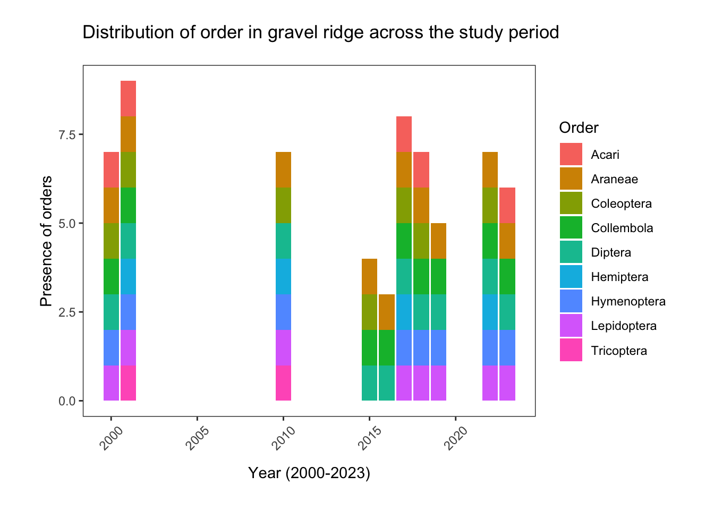
The number of distinct orders in sedge meadow habitat appeared to remain relatively stable from 2000 to 2023. In every year, we observed Araneae, Coleoptera, Diptera, Hemiptera, Hymenoptera, and Lepidoptera. Notably, Collembola specimens, the second most abundant order, were entirely absent between 2010-2011, as were Acari.
Taxa richness in gravel ridge habitat dropped sharply from 7 (in 2000) to just 3 distinct orders in 2016. Only Araneae and Diptera specimens were consistently present in all years of the study. With the exception of 2015-2016, Lepidoptera and Hymenoptera species were also represented. Coleoptera was entirely absent from 2019 and 2023, and after 2010, Tricoptera disappeared from the gravel ridge samples entirely.
Tricoptera (caddisflies) are generally found in wetlands, so their absence in dry gravel ridge habitat is not completely unexpected. However, they were also absent in the 2017, 2019 and 2023 sedge meadow data. Could this be indicative of the habitat at East Bay becoming less hospitable to caddisflies?
Show the code
# Tricoptera (caddisflies) are completely absent in recent gravel ridge samples
# Where and when were tricoptera found in the data-set?
cols <- c('SM'= "#52854C",'GR'= "#D16103")
habitats <- c('SM'= 'Sedge meadow', 'GR'= 'Gravel ridge')
tricoptera<- bugs_EBM %>%
filter(new_order == "Tricoptera",
new_habitat %in% c("GR", "SM"),
replicate <= 5) %>%
ggplot(aes(x= obsYear, y= abundance, colour= new_habitat)) +
theme_bw() +
geom_jitter(width = 0.5, height = 0.5) + # added jitter so we can see all the data
scale_colour_manual(name= "Habitat",
labels = habitats,
values = cols, aesthetics = 'colour') +
labs(x = 'Year',
y= 'Abundance',
color= 'Habitat',
title= 'The abundance of caddisfies in sedge meadow\
and gravel ridge from 2000 to 2023')
# In earlier years, caddisflies were in both GR and SM (although more so in SM)
# In recent years, they are only in SM
tricoptera 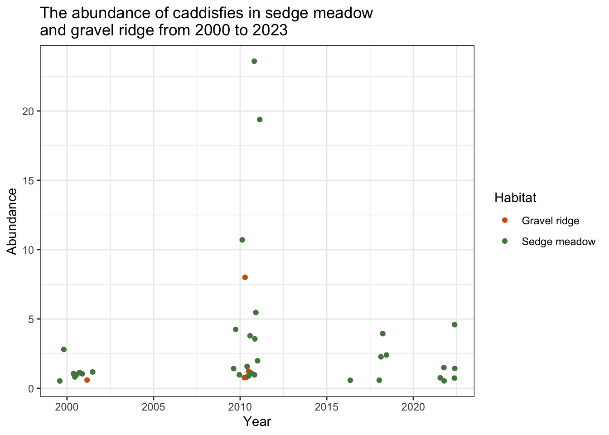
When restricted to 5 or less replicates, this scatter plot does not show a clear pattern in the abundance of Tricoptera specimens from 2000-2023.
Collembola are a highly represented order in our dataset, but they are absent from a few years in the middle of our study. Let’s visualize the distribution of Collembola specimens from 2000 to 2023.
Show the code
collembola<- bugs_EBM %>%
filter(new_order == "Collembola",
new_habitat %in% c("GR", "SM"),
replicate <= 5) %>%
ggplot(aes(x= obsYear, y= abundance, colour= new_habitat)) + theme_bw()+
geom_jitter(width = 0.5, height = 0.5) + # added jitter so we can see all the data
scale_colour_manual(name= "Habitat",
labels = habitats,
values = cols, aesthetics = 'colour') +
labs(x= 'Year',
y= 'Abundance',
color= 'Habitat',
title = 'Springtail abundance in sedge meadow and\
gravel ridge from 2000 to 2023')
collembola 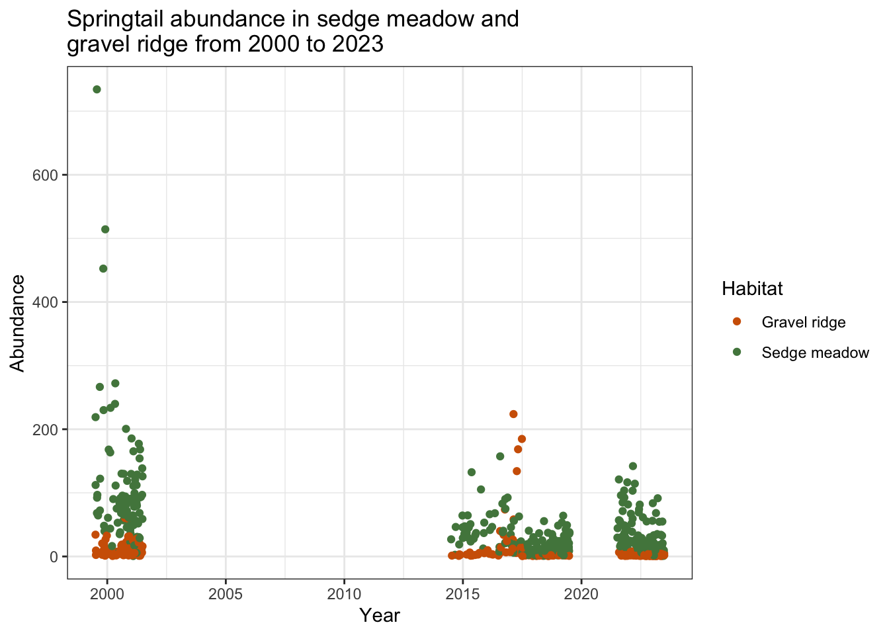
The gap between 2001 and 2015 is strange, given the volume of samples containing Springtails in both gravel ridge and sedge meadow before and after this time period. This may be an error in specimen identification or data collection, rather than an ecological pattern.
Coleoptera (beetle) specimens were intermittently absent from gravel ridge habitat in recent years, which is surprising given that they are among the top 5 orders in this dataset.
Show the code
coleoptera <- bugs_EBM %>%
filter(new_order == "Coleoptera",
new_habitat %in% c("GR", "SM"),
replicate <= 5) # restrict to 5 replicates to reduce bias
coleoptera_legend <- coleoptera %>% group_by(new_habitat) %>%
summarise(n= n_distinct(sample_ID))
# Customize legend for below plot by adding in sample size
# referring back to data directly, so the code updates if something
# changes
habitats <- c('SM'= paste('Sedge meadow, n=', coleoptera_legend$n[2]), 'GR'= paste('Gravel ridge, n=', coleoptera_legend$n[1]))
coleoptera %>%
ggplot(aes(x= obsYear, y= abundance, fill= new_habitat)) +
geom_col() + theme_bw() +
scale_colour_manual(name= "Habitat, # of samples",
labels = habitats,
values = cols, aesthetics = 'fill') +
custom_theme+
labs(x= "Year",
y= "Abundance",
fill= "Habitat",
title = "Abundance of Coleoptera in gravel ridge\
and sedge meadow from 2000-2023")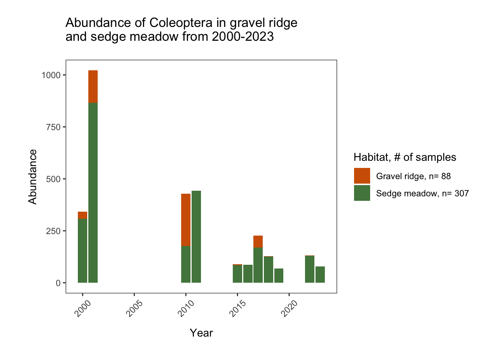
The disappearance of Coleoptera species from the gravel ridge habitat seems alarmingly abrupt. Even in sedge meadow habitat, beetle abundance is much smaller in recent years. We will return to these abundance trends in the next section of this EDA.
Can we learn anything more about shifts in taxa richness by visualizing our family data?
Show the code
sr_fam <- bugs_EBM %>%
filter(!is.na(new_family),
new_habitat %in% c("SM","GR")) %>%
#removing all samples where we didn't have family data
group_by(obsYear, new_habitat) %>% #including this smaller habitat var
summarise(taxa_richness= n_distinct(new_family),
total_samples= n_distinct(sample_ID),
richness_sample = taxa_richness/total_samples, .groups= 'keep')
# reorder factor so higher values are first in legend
sr_fam$new_habitat <- factor(sr_fam$new_habitat,
c("SM","GR"))
# make the plot
sr_fam %>%
ggplot(aes(x=obsYear, y= taxa_richness, colour = new_habitat)) +
geom_line() +
scale_color_manual(values= wes_palette(n=2, "Cavalcanti1"))+
geom_point() + theme_bw() +
labs(x= "Year (2000-2023)",
y= "Total taxa richness (by family)",
title= "Total annual taxa richness (distinct families) by habitat",
size= "No. of samples",
colour= "Habitat")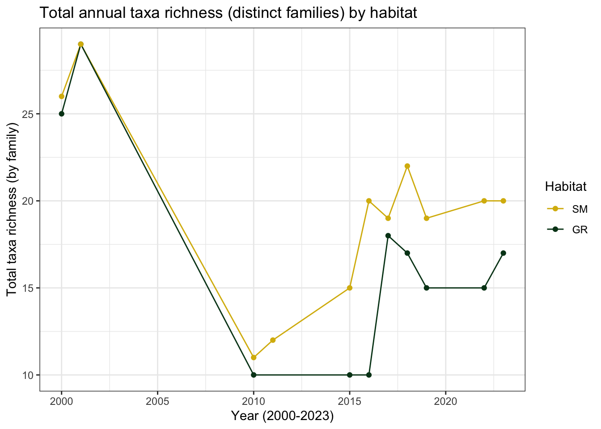
Interestingly, this graph shows that both sedge meadow and gravel ridge habitat experienced a dip in taxa richness between 2010 and 2015. The number of families began increasing after this, but neither habitat has returned to the biodiversity levels measured in 2000-2001.
Arthropod abundance
In what year(s) and habitat(s) did we observe the highest number of arthropods? Has arthropod abundance decreased from 2000 to 2023?
First, I will measure change in arthropod abundance per sample by calculating the total abundance in each year, and dividing that sum by the number of unique samples. This will help standardize the different sampling efforts across the seasons.
Show the code
# Make a tibble
bugs_EBM %>%
group_by(obsYear) %>%
summarise(total_abundance= sum(abundance),
# create a column with the number of distinct samples
total_samples= n_distinct(sample_ID),
# create a column with total abundance/total samples
abundance_sample = total_abundance/total_samples) %>%
# Plot
ggplot(aes(x=obsYear, y =abundance_sample)) +
geom_col(fill='#293352') + theme_bw()+
custom_theme +
labs(x= "Year",
y= "Arthropod abundance per sample",
title= "Arthropod abundance per sample from 2000-2023")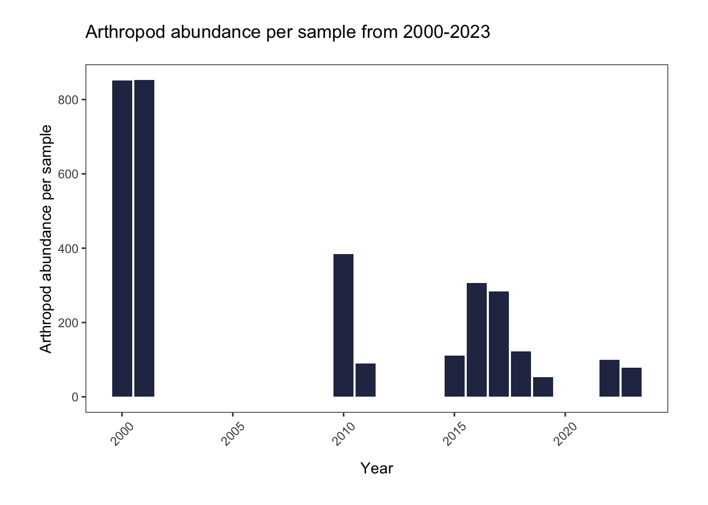
Among all sampled habitats and taxonomic groups, the arthropod abundance per sample is higher in 2000-2001, compared to more recent years. Abundance appears to have an overall decreasing trend from 2000 to 2023, but it is variable from year to year.
Because the early years of the study included more habitats than just sedge meadow and gravel ridge, we will need to investigate how abundance changes in just these habitats.
Show the code
abundance_sample <- bugs_EBM %>%
filter(new_habitat %in% c("SM", "GR")) %>%
group_by(obsYear, new_habitat) %>%
summarise(total_abundance= sum(abundance),
total_samples= n_distinct(sample_ID),
abundance_sample = total_abundance/total_samples,
.groups = 'keep')
abund_sample_legend <- abundance_sample %>%
group_by(new_habitat) %>%
summarize(total_samples = sum(total_samples))
# Customize legend for below plot by adding in sample size
cols <- c('SM'= "#52854C",'GR'= "#D16103")
# referring back to data directly, so the code updates if something
# changes
habitats <- c('SM'= paste('Sedge meadow, n=', abund_sample_legend$total_samples[2]),
'GR'= paste('Gravel ridge, n=', abund_sample_legend$total_samples[1]))
abund_sample_plot <- abundance_sample %>%
ggplot(aes(x=obsYear, y= abundance_sample,
colour = new_habitat)) +
geom_line() +
geom_point() + theme_bw() +
scale_colour_manual(name= "Habitat, # of samples",
labels = habitats,
values = cols, aesthetics = 'colour') +
labs(x= "Year (2000-2023)",
y= "Arthropod abundance per sample",
title= paste("Annual arthropod abundance per sample in dry versus wet habitat,\
n=",abund_sample_legend$total_samples[2] + abund_sample_legend$total_samples[1], 'samples'),
size= "No. of samples",
colour= "Habitat")
abund_sample_plot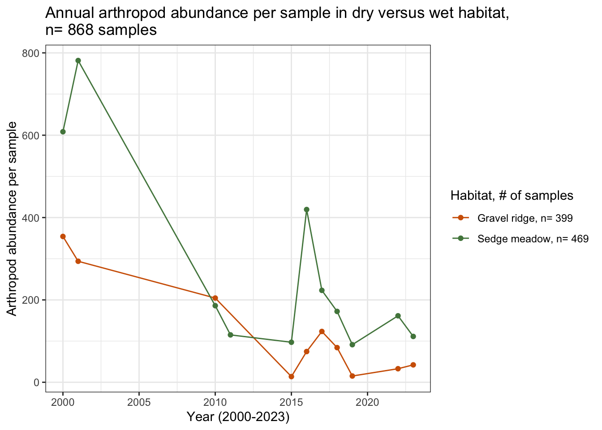
The decreasing trend of arthropod abundance per sample over time still holds, even when narrowing the analysis to sedge meadow and gravel ridge habitat. The highest abundance of arthropods was collected in sedge meadow habitat during the 2001 season.
The below figures are boxplots of average daily abundance in sedge meadow, gravel ridge, and all habitats over the study period. In this case, “average daily abundance” is the abundance values from all replicates, averaged together for each day.
Show the code
# Create a dataframe with all of the samples from replicates
# (in all habitats) averaged for each day.
total_daily_avg <- bugs_EBM %>%
group_by(obsYear, julian_day) %>%
# Average together replicates (in all habitat types) to get daily average
summarise(daily_average = mean(abundance), .groups = "keep")
all <- total_daily_avg %>%
ggplot(aes(x=as.factor(obsYear), y= daily_average)) + theme_bw() +
geom_boxplot() +
labs(x= "Year (2000-2023)",
y = "Daily arthopod average ",
title= "Daily arthropod average from 2000-2023")
# Is this pattern consistent in both sedge meadow and gravel ridge habitats?
## WET HABITAT
habitat_daily_avg <- bugs_EBM %>%
group_by(obsYear, new_habitat, julian_day) %>%
# Average together replicates (in all habitat types) to get daily average
summarise(daily_average = mean(abundance), .groups = "keep")
sm <- habitat_daily_avg %>%
filter(new_habitat == "SM") %>%
ggplot(aes(x=as.factor(obsYear), y= daily_average)) + theme_bw() +
geom_boxplot() +
labs(x= "Year (2000-2023)",
y = "Daily arthopod average ",
title= "Sedge Meadow")
## DRY HABITAT
gr <- habitat_daily_avg %>%
filter(new_habitat == "GR") %>%
ggplot(aes(x=as.factor(obsYear), y= daily_average)) + theme_bw() +
geom_boxplot() +
labs(x= "Year (2000-2023)",
y = "Daily arthopod average ",
title= "Gravel Ridge")
(sm + gr) / all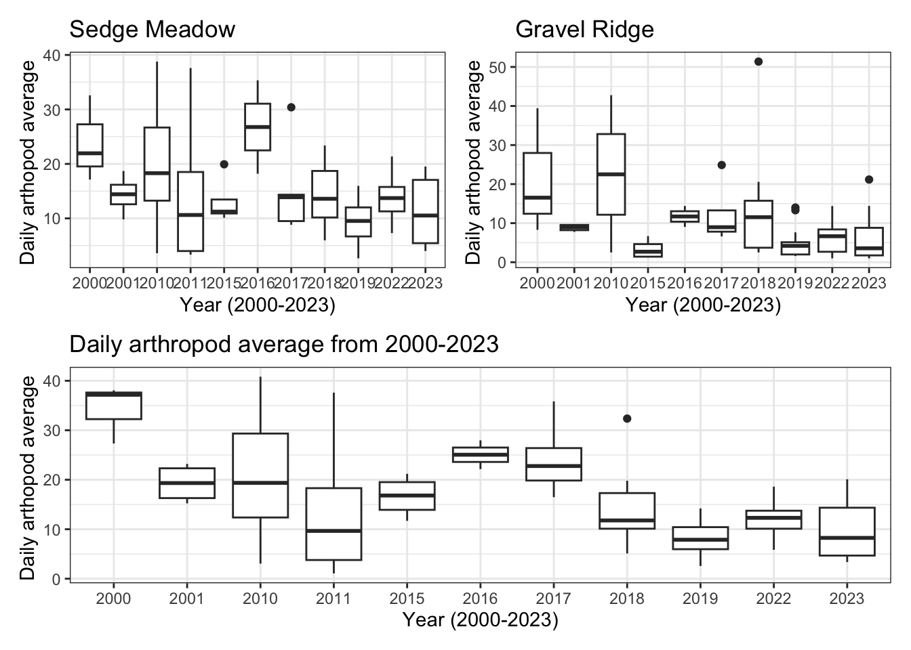
The daily average arthropod abundance in all habitats fluctuates between 2000 and 2023. Average abundance decreased between 2000 and 2011, but increased between 2011 and 2016. For the past 7 years, however, daily abundance has decreased.
Average abundance in sedge meadow habitat followed a similar pattern, whereas average abundance in gravel ridge has maintained a low average daily abundance since 2015.
Another way to visualize these data is with a scatter plot and standard error bars. Here, we averaged together all of our abundance values over a year (i.e. on average, how many individuals of the same taxa did we find in each sample we collected?). The seasonal average daily abundance of arthropods in East Bay Mainland appears to have a negative relationship with time, although the standard error is very large between 2000-2018.
Show the code
# average together all the replicates in a season
season_average <- data_summary(data= bugs_EBM, varname = 'abundance',
groupnames = c('obsYear'))
season_average %>%
ggplot(aes(x=obsYear, y = abundance)) + theme_bw() +
geom_point(colour= '#293352') +
# Add error bars
geom_errorbar(aes(ymin= abundance-sd, ymax= abundance+sd), width= 0.2,
position = position_dodge(0.05))+
geom_line() +
labs(x= "Year",
y= "The average daily abundance",
title= "Daily abundance (seasonal average) (+/- SE) from 2000-2023")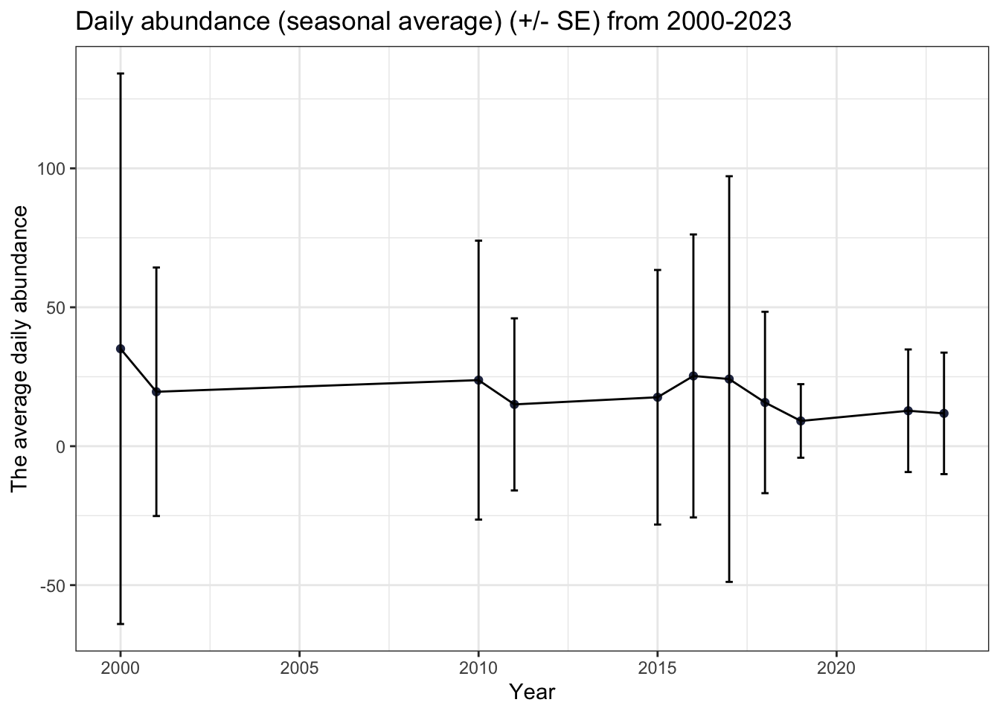
Is this pattern consistent across our most highly represented taxonomic orders?
Show the code
# Define top 5 orders
top_orders <- c("Diptera", "Collembola", "Araneae","Hymenoptera","Coleoptera")
# average all replicates in a season FOR EACH ORDER
top5_season_average <- bugs_EBM %>%
filter(new_order %in% top_orders) %>%
data_summary(varname = 'abundance',
groupnames = c('obsYear', 'new_order'))
top5_season_average %>%
ggplot(aes(x=obsYear, y = abundance, colour = new_order)) +
theme_bw() +
scale_color_manual(values= wes_palette(n=5, "Cavalcanti1"))+
geom_point() +
geom_line() +
# add error bars
geom_errorbar(aes(ymin= abundance-sd, ymax= abundance+sd), width= 0.2,
position = position_dodge(0.05)) +
labs(x= "Year",
y= "The average daily abundance",
colour = "Taxonomy (Order)",
title= "Daily abundance (seasonal average) (+/- SE) of top 5 arthropod orders\
from 2000-2023")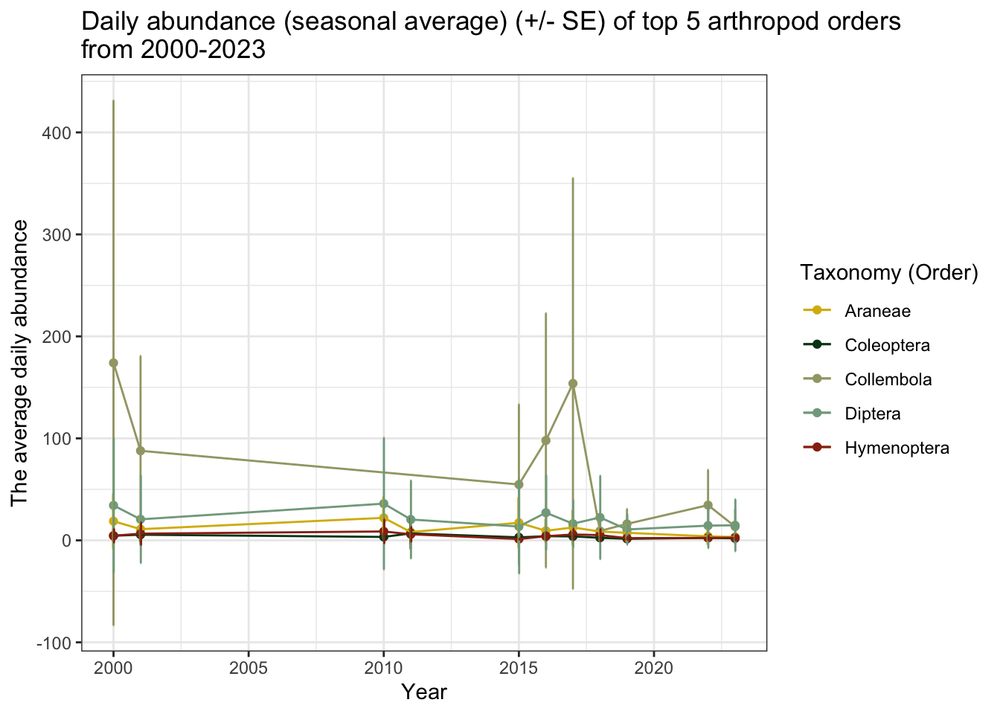
The relationship between average daily abundance of Collembola and year appears to be much more extreme when compared to the other four taxonomic groups. Let’s look at the other groups without springtails.
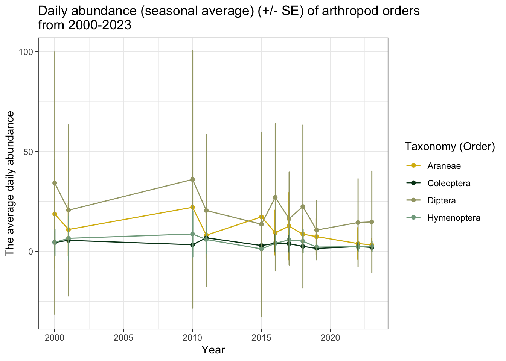
In addition to springtails, spiders (Araneae) and flies (Diptera) also appear to have a decreasing average daily abundance in recent years.
These figures may be misleading, however, because not every season had the same sampling effort. For example, if arthropods were only collected for two weeks in 2000-2001 during peak emergence, the daily average for that season would be far higher than the seasonal daily average of a much longer sampling period. It is also important to note that the error margins (particularly for Collembola) are very large.
Arthropod Phenology
Phenology is the study of an organism’s life events within a season. This is particularly relevant to Arctic arthropod research because the timing of arthropod emergence is closely linked to the brood success of threatened migratory shorebirds. Changes in local abiotic conditions (such as temperature, snowcover, and freeze-thaw cycles) may lead to a “phenological mismatch” between the arrival of breeding birds and the proliferation of their food source.
Show the code
# Create year categories, so we can filter data set and simplify our graph
early_years <- c(2000, 2001)
mid_years <- c(2010, 2015)
recent_years <- c(2019, 2022, 2023)
years <- c(early_years, mid_years, recent_years)
## WET HABITAT
wet_error <- bugs_EBM %>%
filter(obsYear %in% years,# filter out chosen years so we can see graph better
new_habitat == "SM") %>%
# average replicates for daily average
data_summary(varname = 'abundance',
groupnames= c('obsYear','julian_day')) %>%
ggplot(aes(x= julian_day, y= abundance, colour = as.factor(obsYear)))+
geom_point() + theme_bw() +
scale_color_manual(values = brewer.pal(n=8, "Paired")) +
geom_line() +
geom_errorbar(aes(ymin= abundance-sd, ymax= abundance+sd), width= 0.2,
position = position_dodge(0.05)) +
labs(x= "Julian day",
y= "Daily arthropod average",
color= "Year",
title= "Sedge Meadow")
## DRY HABITAT
dry_error <- bugs_EBM %>%
filter(obsYear %in% years,# filter out chosen years so we can see graph better
new_habitat == "GR") %>%
data_summary(varname = 'abundance',
groupnames= c('obsYear','julian_day')) %>%
ggplot(aes(x= julian_day, y= abundance, colour = as.factor(obsYear)))+
geom_point() + theme_bw() +
scale_color_manual(values = brewer.pal(n=8, "Paired")) +
geom_line() +
geom_errorbar(aes(ymin= abundance-sd, ymax= abundance+sd), width= 0.2,
position = position_dodge(0.05)) +
labs(x= "Julian day",
y= "Daily arthropod average",
color= "Year",
title= "Gravel Ridge Habitat")
dry_error / wet_error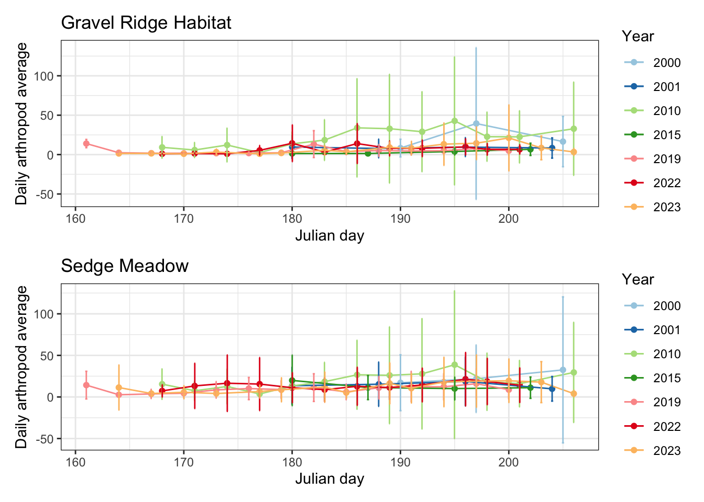
While it’s important to note that the error for 2000 and 2010 daily averages is substantial, it is difficult to discern a pattern with this figure.
Below is the same graph without the error bars, so that we can better distinguish intra and inter-seasonal trends in arthropod abundance.
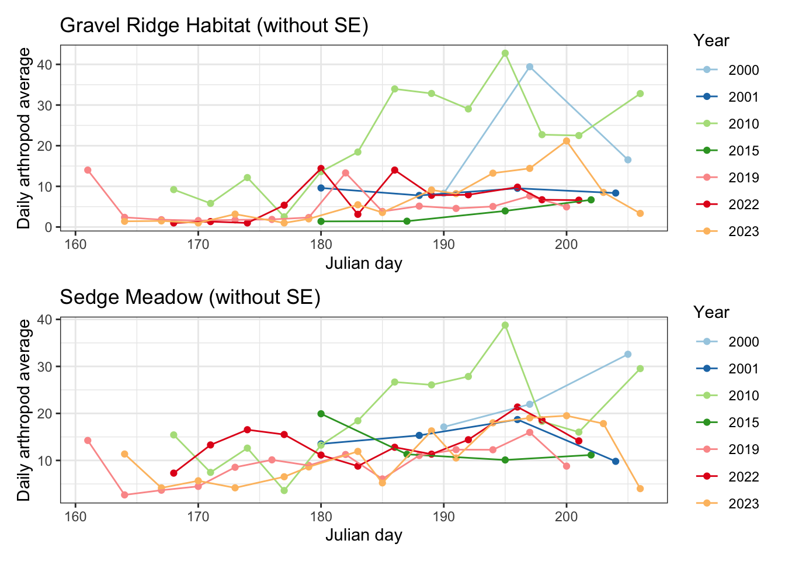
This graph shows the daily arthropod average throughout each season. The earlier years of this study (2000, 2001, 2010,2011) had the highest daily arthropod abundance (with large standard errors). Arthropods appear to have reached their maximum average abundance at different times within each of these seasons. There’s much more of a defined peak in the graph for these years, whereas average abundance trends in seasons after 2015 appear more flat.
When did arthropods reach their peak abundance each season? Has peak abundance shifted to an earlier or later date over the years of this study?
Show the code
# Group by year and jday to get total abundance of arthropods on each day
bugs_EBM_dt <- bugs_EBM %>%
group_by(obsYear, julian_day, new_order) %>%
summarise(total_abundance = sum(abundance), .groups = 'keep')
# turn this into a data table so you can manipulate it via indexing
bugs_EBM_dt <- data.table::as.data.table(bugs_EBM_dt)
# How has the day with the highest total abundance changed
# across the years in each insect Order?
max_jdate_order <-
bugs_EBM_dt[bugs_EBM_dt[, .I[total_abundance == max(total_abundance)],
#group by 2 columns with list()
by = list(obsYear, new_order)]$V1] %>%
dplyr::filter(new_order %in% top_orders) %>% # only look at top 5 Orders
ggplot(aes(x = obsYear, y = julian_day, color = new_order)) + theme_bw() +
geom_line() +
geom_point() +
scale_color_manual(values= wes_palette(n=5, "Cavalcanti1"))+
labs(x = "Year",
y = "Julian day",
title = "Arthropod emergence (day of peak abundance) of 5 Arthropod orders\
from 2000-2023",
colour= "Order")
# Plot of the jday of maximum abundance among top 5 insect families throughout study
max_jdate_order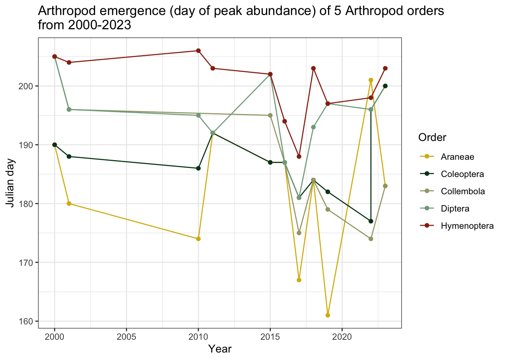
Note: In this graph, higher y-values correspond to larger “Julian dates,” meaning the taxonomic group reached their maximum abundance later in the season
Bees and wasps achieved their peak abundance later than the other top Orders in the dataset, with the exception of spiders in 2022. Spiders had the earliest emergence dates, but they reached their maximum abundance later in the season in recent years. Springtails achieved maximum abundance earlier in the season after 2015.
Building a General Linear Model of Abundance
How does habitat, year, and taxonomic group impact the daily average insect abundance at East Bay Mainland?
The figures generated above provide useful insight into arthropod abundance trends between 2000 and 2023. Quantitative models allow us to mathematically evaluate relationships between predictor variables (ex. year) and response variables (ex. abundance). Choosing an appropriate model requires consideration of data distribution and possible sources of bias.
I will only model the abundance of the top 5 orders found in these data (Diptera, Collembola, Araneae, Hymenoptera, and Coleoptera). To begin, I will make the absence of each of these Orders explicit in every measurement (this means that, even when there were no specimens in the sample, if the trap was visited there will be a row for each Order in the data with abundance = 0). This will allow us to treat abundance values as count data.
# truncate dataset
glm_bugs <- bugs_EBM %>%
dplyr::select(-date_start, -site, -new_family) %>%
filter(new_habitat %in% c("GR", "SM"))
# We'll need to make these absences explicit in our data
# There should always be at least 5 replicates for each
# year-new_habitat-day combo
# AND a row for each Order (if Order was not found in that sample, then abundance = 0)
# Create a table with explicit zeros
glm_bugs <- glm_bugs %>% complete(nesting(obsYear, julian_day,
new_habitat, replicate, trap_year), new_order,
# nesting() groups the variables you want
# Variables out of () will create unique combinations for each (grouping)
fill = list(abundance= 0),
# fill= tells R what you want to call each new value (NA or zero)
explicit = FALSE) %>%
filter(new_habitat %in% c("SM","GR"),
new_order %in% top_orders) %>%
dplyr::group_by(obsYear, julian_day, new_habitat, new_order, replicate, trap_year) %>%
# add together within day and order to get total abundance
# (all families within order summed together)
summarize(total_count = sum(abundance), .groups = "keep")
# It works for both 2000 and post 2000 data (even in cases where we had 10 replicates)
glm_preview<- head(glm_bugs)
paged_table(glm_preview)glm_bugs %>%
filter(total_count>0) %>% # don't need to plot absences
ggplot(aes(x=obsYear, y=total_count, color= new_habitat)) +
geom_jitter() + theme_bw() + custom_theme +
scale_color_manual(name= "Taxonomic Order",
values= wes_palette(n=5, "Cavalcanti1"))+
labs(x= "Year of study (2000-2023)",
y= "Daily abundance",
title= "Daily abundance of top 5 arthropod orders from 2000-2023\
in Gravel Ridge versus Sedge Meadow")+
facet_wrap(.~new_order, scales= "free_y")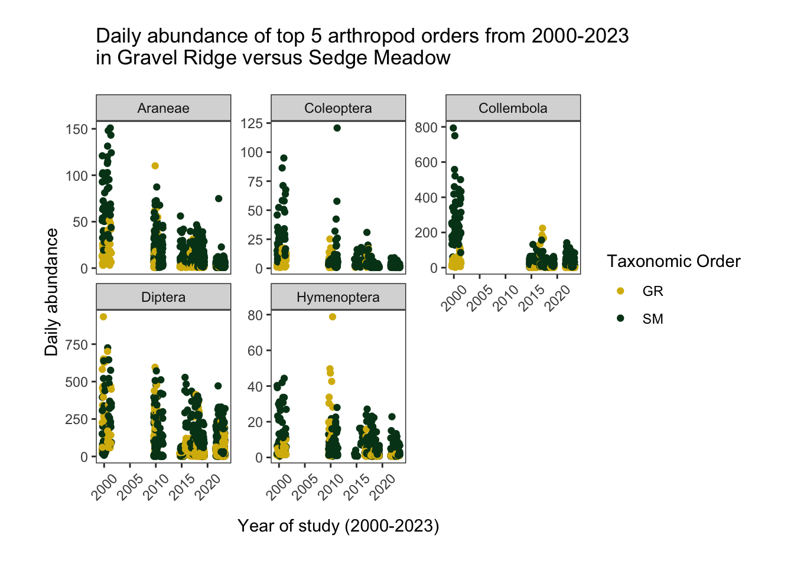
The jittered scatterplot shows the daily abundance values of each of the top 5 taxonomic Orders from 2000 to 2023 in gravel ridge and sedge meadow habitat. Each point on the graph corresponds to the total number of specimens found belonging to a particular taxonomic group on a given day and trap.
A negative binomial model is appropriate for these data, since there is a large amount of zero-counts (also called “over-dispersion”) after making absences explicit “Negative Binomial Regression | r Data Analysis Examples” (n.d.).
When looking at truncated count data (abundance > 0), we can see that within each habitat, taking all of the taxonomic orders together, there seems to be a relationship between abundance and time.
There are also interactions between potential predictor variables. Particularly noticeable is the interaction between taxonomic group and time, with some Orders experiencing declines from 2000 to 2023 (Diptera, Collembola) and others appearing to remain at relatively constant low abundance (Hymenoptera) throughout the study period.
We can also see a possible interaction between taxonomic group and habitat, with some Orders being more abundant in sedge meadow (ex. Collembola, Araneae, Coleoptera). We will need to account for these interactions in our general linear model by including taxonomy*habitat and taxonomy*year interaction terms.
Finally, there may be unmeasured similarities between the microhabitats at each trap/replicate. We aren’t interested in exploring the details of these similarities, but ignoring them in our model will lead to autocorrelation (a form of bias). General linear mixed models allow us to account for autocorrelation with “random effects.” We can use trap_year, the variable that identifies unique replicates within each season, as our random-intercept.
Thus, we will fit our model using a negative binomial distribution and a random intercept of trap_year. Our fixed effects will be:
Year (numerical)
Julian day (numerical)
Taxonomic group (categorical)
Habitat (categorical)
Taxonomic group*Habitat
Taxonomic group*Year
There are many different packages in R for fitting negative binomial GLM models, but for this project I will use glmmTMB for its speed and similarity to packages I am more familiar with (lme4) (Francisco Rowe 2021b).
#### MODEL ####
# How does habitat, year, and taxonomic group impact the daily average insect abundance?
# There's a lot of zero's, so to account for over-dispersion, we will fit a negative binomial distribution
# FIRST, Set reference categories (SM, and Diptera)
### These are what the model compares the categorical variables to
# reorder the factors manually
glm_bugs$new_habitat <- factor(glm_bugs$new_habitat,
c("SM", "GR"))
glm_bugs$new_order <- factor(glm_bugs$new_order,
c("Diptera",
"Collembola",
"Araneae",
"Hymenoptera",
"Coleoptera"))
# Define the negative binomial model (should work better for lots of zero's)
fit.nb <- glmmTMB(total_count ~ new_habitat + obsYear + new_order + julian_day +
new_habitat*new_order + new_order*obsYear + #interaction terms
(1|trap_year), # random effect
data= glm_bugs,
ziformula = ~0, # specifies no zero-inflation
family = nbinom2) # neg. binom. dist. /w quadratic parameterization
summary(fit.nb) Family: nbinom2 ( log )
Formula:
total_count ~ new_habitat + obsYear + new_order + julian_day +
new_habitat * new_order + new_order * obsYear + (1 | trap_year)
Data: glm_bugs
AIC BIC logLik -2*log(L) df.resid
26533.7 26648.4 -13248.8 26497.7 4322
Random effects:
Conditional model:
Groups Name Variance Std.Dev.
trap_year (Intercept) 0.6058 0.7783
Number of obs: 4340, groups: trap_year, 115
Dispersion parameter for nbinom2 family (): 0.636
Conditional model:
Estimate Std. Error z value Pr(>|z|)
(Intercept) 119.808999 22.147954 5.409 6.32e-08 ***
new_habitatGR -0.452497 0.173454 -2.609 0.00909 **
obsYear -0.059689 0.010979 -5.437 5.42e-08 ***
new_orderCollembola 52.319887 16.909818 3.094 0.00197 **
new_orderAraneae 191.761611 20.382311 9.408 < 2e-16 ***
new_orderHymenoptera 45.092720 20.035782 2.251 0.02441 *
new_orderColeoptera 205.582825 21.399906 9.607 < 2e-16 ***
julian_day 0.027362 0.002394 11.432 < 2e-16 ***
new_habitatGR:new_orderCollembola -1.816630 0.136473 -13.311 < 2e-16 ***
new_habitatGR:new_orderAraneae -2.109776 0.143765 -14.675 < 2e-16 ***
new_habitatGR:new_orderHymenoptera -1.035920 0.144233 -7.182 6.86e-13 ***
new_habitatGR:new_orderColeoptera -1.877816 0.161301 -11.642 < 2e-16 ***
obsYear:new_orderCollembola -0.026562 0.008389 -3.166 0.00154 **
obsYear:new_orderAraneae -0.096006 0.010111 -9.495 < 2e-16 ***
obsYear:new_orderHymenoptera -0.024047 0.009943 -2.419 0.01558 *
obsYear:new_orderColeoptera -0.103658 0.010619 -9.762 < 2e-16 ***
---
Signif. codes: 0 '***' 0.001 '**' 0.01 '*' 0.05 '.' 0.1 ' ' 1# Calculate confidence intervals with Wald's method
confint(fit.nb) 2.5 % 97.5 % Estimate
(Intercept) 76.39980662 163.218191740 119.80899918
new_habitatGR -0.79245998 -0.112533619 -0.45249680
obsYear -0.08120629 -0.038170931 -0.05968861
new_orderCollembola 19.17725244 85.462521736 52.31988709
new_orderAraneae 151.81301512 231.710206011 191.76161056
new_orderHymenoptera 5.82330892 84.362130609 45.09271977
new_orderColeoptera 163.63977944 247.525870611 205.58282503
julian_day 0.02267092 0.032053438 0.02736218
new_habitatGR:new_orderCollembola -2.08411251 -1.549147474 -1.81662999
new_habitatGR:new_orderAraneae -2.39155010 -1.828001759 -2.10977593
new_habitatGR:new_orderHymenoptera -1.31861151 -0.753229209 -1.03592036
new_habitatGR:new_orderColeoptera -2.19396007 -1.561672644 -1.87781635
obsYear:new_orderCollembola -0.04300406 -0.010119998 -0.02656203
obsYear:new_orderAraneae -0.11582357 -0.076189294 -0.09600643
obsYear:new_orderHymenoptera -0.04353482 -0.004559952 -0.02404739
obsYear:new_orderColeoptera -0.12447001 -0.082846083 -0.10365804
Std.Dev.(Intercept)|trap_year 0.67183411 0.901684861 0.77832040Understanding the model results
The model summary shows the coefficient values for each of my predictors (under “Estimate”), and their associated standard errors, Z-scores, and p-values. Every predictor in my model is statistically significant, including my interaction terms (P<0.05). Arthropod abundance increases with julian day, a pattern that is reflected in my phenology figures (there seems to be more arthropods later in the season).
Sedge meadow and the order Diptera (flies) were our reference groups for our categorical predictors (reference groups are what R compares the remaining categorical levels with).
The strength of the relationship between arthropod abundance and year depends on taxonomic group, but all 5 orders decrease in abundance over time. The effect of habitat type on arthropod abundance also depends on taxonomy. In gravel ridge habitat, the abundances of spiders, wasps, and springtails are all significantly lower than the abundance of flies, when all other variables in the model are held constant.
Caveats:
This is a very preliminary summary of results, meant to mathematically represent the relationships between the variables I explored for my EDA. If I were to continue with this project, I would include environmental predictors known to affect arthropod abundance, like snow melt, and mean temperature. I would also look more closely at how our model structure accomodates our study design (i.e. is trap_year an appropriate random intercept? Is nesting required?), and compare models with and without my interaction terms.
Part IV: Conclusions
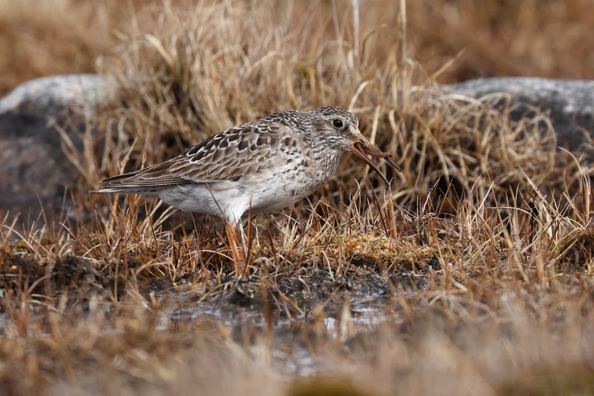
Revisiting Questions
How has the community composition of arthropods at East Bay Mainland changed over time? Has community composition shifted in some habitat types but not others?
The taxa richness appeared to fluctuate throughout the study period in both habitats, though these patterns were more noticeable in gravel ridge habitat. For example, between 2000 and 2023 the number of unique Orders remained relatively constant in sedge meadow habitat but sharply decreased in gravel ridge sites. Both habitat types appeared to have fewer unique families in recent years compared to 2000-2001. Notably, beetles were entirely absent in gravel ridge (and intermittently absent in sedge meadow) in recent years, and their total seasonal abundance steadily declined between 2001 and 2023 in both habitats.
How has the abundance of arthropods changed over time?
Our general linear mixed model showed significant declines in fly, bee and wasp, spider, and springtail abundance between 2000 to 2023.
In the figures produced by this EDA, there is a noticeable decline in average daily arthropod abundance (abundance values of all replicates averaged together), despite some inter-seasonal fluctuation. This decline is particularly strong in gravel ridge habitat, and among springtails, spiders, and flies (although the standard error is quite large).
Has the timing of arthropod emergence at East Bay Mainland shifted from 2000-2023? If there has been a shift, is it more extreme in dry or wet habitat?
According to our model, the abundance of arthropods tends to increase with julian day within each taxonomic group and habitat.
Our figures show that the arthropods achieved higher peak abundances in the the first half of the study period (before 2011). The intra-seasonal timing of this peak abundance seemed to vary widely between years, but after 2015 the daily arthropod abundance was more consistent throughout the season (the slope of daily abundance vs julian day was closer to 0)
Of the top 5 taxonomic orders, bees and wasps reached their peak abundance latest in the season (with one exception). Spiders had the earliest peak abundance dates, but their timing seemed to shift to later in the season in recent years. In contrast, the peak abundance of springtails appeared to shift earlier in the season in the past 8 years.
Ecological importance and next steps
Arthropods provide vital ecosystem services, from aerating soil and breaking down detritus to pollinating plants and feeding threatened bird species. However, this incredibly diverse taxonomic group is vastly understudied.
Climate change in the Arctic is happening faster than anywhere else on earth (Rantanen et al. 2022), with changes in temperature, soil moisture, the length of the growing season, and freeze/thaw events all likely to impact arthropods (Hodkinson, Ian D. 2013). The effects of these changes will depend on the unique dispersal ability, life-history, and thermal tolerance of each species (Chowdhury et al. 2023).
We need to establish long-term arthropod monitoring efforts across the Canadian Arctic, using a variety of trapping methods. This would improve our understanding of the biodiversity and species distributions across the region. With these baseline data, we could use select species as “bioindicators,” to monitor the regional and site-level impacts of climate change (Chowdhury et al. 2023).
The dataset explored in this analysis is one of the few existing examples of long-term Arctic arthropod data. These specimens were only identified to order and, in some cases, family, however all of the samples explored in this EDA still exist at the National Wildlife Research Center. We could harness tools like DNA meta-barcoding to identify specimens to the species-level, and complete more fine-scale analyses on community composition at East Bay Mainland. These efforts could provide insight into designing other long-term sampling efforts across the Arctic.
Bibliography
Photography used with permission from my colleague, Liam Singh
References
Chowdhury, Sanhita, Vinod Kumar Dubey, Srishti Choudhury, Abhibandana Das, Deepika Jeengar, B. Sujatha, Anil Kumar, Nagendra Kumar, Anshuman Semwal, and Vinod Kumar. 2023. “Insects as Bioindicator: A Hidden Gem for Environmental Monitoring.” Frontiers in Environmental Science 11 (March). https://doi.org/10.3389/fenvs.2023.1146052.
Flemming, Scott A., Paul A. Smith, Lisa V. Kennedy, Alexandra M. Anderson, and Erica Nol. 2022. “Habitat Alteration and Fecal Deposition by Geese Alter Tundra Invertebrate Communities: Implications for Diets of Sympatric Birds.” Edited by Emmanuel Serrano. PLOS ONE 17 (7): e0269938. https://doi.org/10.1371/journal.pone.0269938.
Francisco Rowe. 2021a. “Modelling Count Data in r: A Multilevel Framework.” https://fcorowe.github.io/countdata_modelling/.
———. 2021b. “Modelling Count Data in r: A Multilevel Framework.” https://fcorowe.github.io/countdata_modelling/.
“Ggplot2 Error Bars : Quick Start Guide - R Software and Data Visualization - Easy Guides - Wiki - STHDA.” n.d. https://www.sthda.com/english/wiki/ggplot2-error-bars-quick-start-guide-r-software-and-data-visualization.
Hodkinson, Ian D. 2013. “Terrestrial and Freshwater Invertebrates.” In, edited by Tom Barry, Dominique Berteaux, and Helga Bültmann, 247–75. Akureyri, Iceland: The Conservation of Arctic Flora; Fauna.
Kim, Ke Chung. 1993. “Biodiversity, Conservation and Inventory: Why Insects Matter.” Biodiversity & Conservation 2 (3): 191–214. https://doi.org/10.1007/BF00056668.
Lewthwaite, Jayme M. M., Teagan M. Baiotto, Brian V. Brown, Yan Yin Cheung, Austin J. Baker, Charles Lehnen, Terrence P. McGlynn, et al. 2024. “Drivers of Arthropod Biodiversity in an Urban Ecosystem.” Scientific Reports 14 (1): 390. https://doi.org/10.1038/s41598-023-50675-3.
“Negative Binomial Regression | r Data Analysis Examples.” n.d. https://stats.oarc.ucla.edu/r/dae/negative-binomial-regression/.
Rantanen, Mika, Alexey Yu. Karpechko, Antti Lipponen, Kalle Nordling, Otto Hyvärinen, Kimmo Ruosteenoja, Timo Vihma, and Ari Laaksonen. 2022. “The Arctic Has Warmed Nearly Four Times Faster Than the Globe Since 1979.” Communications Earth & Environment 3 (1): 168. https://doi.org/10.1038/s43247-022-00498-3.
Sánchez-Bayo, Francisco, and Kris A. G. Wyckhuys. 2019. “Worldwide Decline of the Entomofauna: A Review of Its Drivers.” Biological Conservation 232 (April): 8–27. https://doi.org/10.1016/j.biocon.2019.01.020.